Gap-filling using random forest (2005, 2008, 2009, 2016)
- for these four years the MDS gap-filling produced unrealistic results due to long data gapsImports#
from pathlib import Path
import matplotlib.pyplot as plt
import matplotlib.gridspec as gridspec
import numpy as np
import pandas as pd
import warnings
warnings.simplefilter(action='ignore', category=pd.errors.PerformanceWarning)
from diive.core.io.files import save_parquet, load_parquet
from diive.pkgs.gapfilling.randomforest_ts import RandomForestTS
from diive.core.plotting.heatmap_datetime import HeatmapDateTime
Settings#
SWIN_COL = "SW_IN_T1_2_1"
TA_COL = "TA_T1_2_1"
VPD_COL = "VPD_T1_2_1"
MGMT_VARS = [
'TIMESINCE_MGMT_FERT_MIN_FOOTPRINT', 'TIMESINCE_MGMT_FERT_ORG_FOOTPRINT', 'TIMESINCE_MGMT_GRAZING_FOOTPRINT',
'TIMESINCE_MGMT_MOWING_FOOTPRINT', 'TIMESINCE_MGMT_SOILCULTIVATION_FOOTPRINT', 'TIMESINCE_MGMT_SOWING_FOOTPRINT',
'TIMESINCE_MGMT_PESTICIDE_HERBICIDE_FOOTPRINT']
# Random forest model settings
rf_settings = dict(
verbose=1,
features_lag=[-1, -1],
features_lag_exclude_cols=MGMT_VARS, # Management variables are not lagged
include_timestamp_as_features=True,
add_continuous_record_number=True,
sanitize_timestamp=True,
n_estimators=200,
random_state=42,
min_samples_split=2,
min_samples_leaf=1,
perm_n_repeats=5,
n_jobs=-1)
Load main data#
SOURCEDIR = r"../32_FLUXES_L1_FluxProcessingChain_IRGA"
FILENAME = r"32.8_FluxProcessingChain_L3.3_NEE_LE_H.parquet"
FILEPATH = Path(SOURCEDIR) / FILENAME
maindf = load_parquet(filepath=FILEPATH)
Loaded .parquet file ..\32_FLUXES_L1_FluxProcessingChain_IRGA\32.8_FluxProcessingChain_L3.3_NEE_LE_H.parquet (0.432 seconds). Detected time resolution of <30 * Minutes> / 30min
Load L4 REddyProc results#
SOURCEDIR = r"../33_FLUXES_L4_REddyProc_MDSGapFilling_IRGA"
FILENAME = r"33.12_REddyProc_L4.1.parquet"
FILEPATH = Path(SOURCEDIR) / FILENAME
rpdf = load_parquet(filepath=FILEPATH)
Loaded .parquet file ..\33_FLUXES_L4_REddyProc_MDSGapFilling_IRGA\33.12_REddyProc_L4.1.parquet (0.042 seconds). Detected time resolution of <30 * Minutes> / 30min
display(maindf)
display(rpdf)
| AIR_MV | AIR_DENSITY | AIR_RHO_CP | AIR_CP | AOA_METHOD | AXES_ROTATION_METHOD | ... | SUM_L3.3_CUT_NONE_H_L3.1_HARDFLAGS | SUM_L3.3_CUT_NONE_H_L3.1_SOFTFLAGS | SUM_L3.3_CUT_NONE_H_L3.1_FLAGS | FLAG_L3.3_CUT_NONE_H_L3.1_QCF | H_L3.1_L3.3_CUT_NONE_QCF | H_L3.1_L3.3_CUT_NONE_QCF0 | |
|---|---|---|---|---|---|---|---|---|---|---|---|---|---|
| TIMESTAMP_MIDDLE | |||||||||||||
| 2005-01-01 00:15:00 | NaN | NaN | NaN | NaN | NaN | NaN | ... | 2.0 | 0.0 | 2.0 | 2.0 | NaN | NaN |
| 2005-01-01 00:45:00 | NaN | NaN | NaN | NaN | NaN | NaN | ... | 2.0 | 0.0 | 2.0 | 2.0 | NaN | NaN |
| 2005-01-01 01:15:00 | NaN | NaN | NaN | NaN | NaN | NaN | ... | 2.0 | 0.0 | 2.0 | 2.0 | NaN | NaN |
| 2005-01-01 01:45:00 | NaN | NaN | NaN | NaN | NaN | NaN | ... | 2.0 | 0.0 | 2.0 | 2.0 | NaN | NaN |
| 2005-01-01 02:15:00 | NaN | NaN | NaN | NaN | NaN | NaN | ... | 2.0 | 0.0 | 2.0 | 2.0 | NaN | NaN |
| ... | ... | ... | ... | ... | ... | ... | ... | ... | ... | ... | ... | ... | ... |
| 2023-12-31 22:45:00 | 0.023718 | 1.21785 | 1228.93 | 1009.10 | 0.0 | 1.0 | ... | 0.0 | 0.0 | 0.0 | 0.0 | -29.190743 | -29.190743 |
| 2023-12-31 23:15:00 | 0.023710 | 1.21827 | 1229.34 | 1009.09 | 0.0 | 1.0 | ... | 0.0 | 0.0 | 0.0 | 0.0 | -31.241158 | -31.241158 |
| 2023-12-31 23:45:00 | 0.023715 | 1.21807 | 1229.13 | 1009.08 | 0.0 | 1.0 | ... | 0.0 | 0.0 | 0.0 | 0.0 | -38.598898 | -38.598898 |
| 2024-01-01 00:15:00 | 0.023648 | 1.22454 | 1233.24 | 1007.10 | 0.0 | 1.0 | ... | 0.0 | 0.0 | 0.0 | 0.0 | -24.008740 | -24.008740 |
| 2024-01-01 00:45:00 | 0.023590 | 1.22761 | 1236.02 | 1006.85 | 0.0 | 1.0 | ... | 0.0 | 0.0 | 0.0 | 0.0 | -17.766680 | -17.766680 |
333074 rows × 498 columns
| NEE_CUT_50_orig | NEE_CUT_50_f | NEE_CUT_50_fqc | NEE_CUT_50_fall | NEE_CUT_50_fall_qc | NEE_CUT_50_fnum | ... | H_fall | H_fall_qc | H_fnum | H_fsd | H_fmeth | H_fwin | |
|---|---|---|---|---|---|---|---|---|---|---|---|---|---|
| TIMESTAMP_MIDDLE | |||||||||||||
| 2005-01-01 00:15:00 | NaN | NaN | NaN | NaN | NaN | NaN | ... | NaN | NaN | NaN | NaN | NaN | NaN |
| 2005-01-01 00:45:00 | NaN | NaN | NaN | NaN | NaN | NaN | ... | NaN | NaN | NaN | NaN | NaN | NaN |
| 2005-01-01 01:15:00 | NaN | NaN | NaN | NaN | NaN | NaN | ... | NaN | NaN | NaN | NaN | NaN | NaN |
| 2005-01-01 01:45:00 | NaN | NaN | NaN | NaN | NaN | NaN | ... | NaN | NaN | NaN | NaN | NaN | NaN |
| 2005-01-01 02:15:00 | NaN | NaN | NaN | NaN | NaN | NaN | ... | NaN | NaN | NaN | NaN | NaN | NaN |
| ... | ... | ... | ... | ... | ... | ... | ... | ... | ... | ... | ... | ... | ... |
| 2023-12-31 21:45:00 | NaN | 1.262247 | 1.0 | 1.262247 | 1.0 | 2.0 | ... | -15.399825 | 1.0 | 12.0 | 12.555280 | 1.0 | 14.0 |
| 2023-12-31 22:15:00 | NaN | -4.601671 | 1.0 | -4.601671 | 1.0 | 3.0 | ... | -14.101359 | 1.0 | 15.0 | 11.454304 | 1.0 | 14.0 |
| 2023-12-31 22:45:00 | NaN | -4.601671 | 1.0 | -4.601671 | 1.0 | 3.0 | ... | -14.101359 | 1.0 | 15.0 | 11.454304 | 1.0 | 14.0 |
| 2023-12-31 23:15:00 | 1.190371 | 1.190371 | 0.0 | -4.601671 | 1.0 | 3.0 | ... | -14.101359 | 1.0 | 15.0 | 11.454304 | 1.0 | 14.0 |
| 2023-12-31 23:45:00 | 1.334124 | 1.334124 | 0.0 | -4.601671 | 1.0 | 3.0 | ... | -14.101359 | 1.0 | 15.0 | 11.454304 | 1.0 | 14.0 |
333072 rows × 45 columns
Merge L4 REddyProc results with main data#
df = pd.concat([maindf, rpdf], axis=1)
_df = df.copy()
df
| AIR_MV | AIR_DENSITY | AIR_RHO_CP | AIR_CP | AOA_METHOD | AXES_ROTATION_METHOD | ... | H_fall | H_fall_qc | H_fnum | H_fsd | H_fmeth | H_fwin | |
|---|---|---|---|---|---|---|---|---|---|---|---|---|---|
| TIMESTAMP_MIDDLE | |||||||||||||
| 2005-01-01 00:15:00 | NaN | NaN | NaN | NaN | NaN | NaN | ... | NaN | NaN | NaN | NaN | NaN | NaN |
| 2005-01-01 00:45:00 | NaN | NaN | NaN | NaN | NaN | NaN | ... | NaN | NaN | NaN | NaN | NaN | NaN |
| 2005-01-01 01:15:00 | NaN | NaN | NaN | NaN | NaN | NaN | ... | NaN | NaN | NaN | NaN | NaN | NaN |
| 2005-01-01 01:45:00 | NaN | NaN | NaN | NaN | NaN | NaN | ... | NaN | NaN | NaN | NaN | NaN | NaN |
| 2005-01-01 02:15:00 | NaN | NaN | NaN | NaN | NaN | NaN | ... | NaN | NaN | NaN | NaN | NaN | NaN |
| ... | ... | ... | ... | ... | ... | ... | ... | ... | ... | ... | ... | ... | ... |
| 2023-12-31 22:45:00 | 0.023718 | 1.21785 | 1228.93 | 1009.10 | 0.0 | 1.0 | ... | -14.101359 | 1.0 | 15.0 | 11.454304 | 1.0 | 14.0 |
| 2023-12-31 23:15:00 | 0.023710 | 1.21827 | 1229.34 | 1009.09 | 0.0 | 1.0 | ... | -14.101359 | 1.0 | 15.0 | 11.454304 | 1.0 | 14.0 |
| 2023-12-31 23:45:00 | 0.023715 | 1.21807 | 1229.13 | 1009.08 | 0.0 | 1.0 | ... | -14.101359 | 1.0 | 15.0 | 11.454304 | 1.0 | 14.0 |
| 2024-01-01 00:15:00 | 0.023648 | 1.22454 | 1233.24 | 1007.10 | 0.0 | 1.0 | ... | NaN | NaN | NaN | NaN | NaN | NaN |
| 2024-01-01 00:45:00 | 0.023590 | 1.22761 | 1236.02 | 1006.85 | 0.0 | 1.0 | ... | NaN | NaN | NaN | NaN | NaN | NaN |
333074 rows × 543 columns
Show management (footprint) columns#
print("MANAGEMENT-IN-FOOTPRINT VARIABLES:")
[print(f" {c}") for c in df if "FOOTPRINT" in c];
MANAGEMENT-IN-FOOTPRINT VARIABLES:
FOOTPRINT_MODEL
MGMT_FERT_MIN_FOOTPRINT
MGMT_FERT_ORG_FOOTPRINT
MGMT_GRAZING_FOOTPRINT
MGMT_MOWING_FOOTPRINT
MGMT_PESTICIDE_HERBICIDE_FOOTPRINT
MGMT_SOILCULTIVATION_FOOTPRINT
MGMT_SOWING_FOOTPRINT
TIMESINCE_MGMT_FERT_MIN_FOOTPRINT
TIMESINCE_MGMT_FERT_ORG_FOOTPRINT
TIMESINCE_MGMT_GRAZING_FOOTPRINT
TIMESINCE_MGMT_MOWING_FOOTPRINT
TIMESINCE_MGMT_PESTICIDE_HERBICIDE_FOOTPRINT
TIMESINCE_MGMT_SOILCULTIVATION_FOOTPRINT
TIMESINCE_MGMT_SOWING_FOOTPRINT
Prepare data for corrections, remove MDS gap-filled data for 2005, 2008, 2009, 2016#
fluxes_mds = [c for c in _df.columns if str(c).endswith("_f")]
fluxes_mds
['NEE_CUT_50_f', 'NEE_CUT_16_f', 'NEE_CUT_84_f', 'LE_f', 'H_f']
for f in fluxes_mds:
HeatmapDateTime(series=_df[f]).plot()
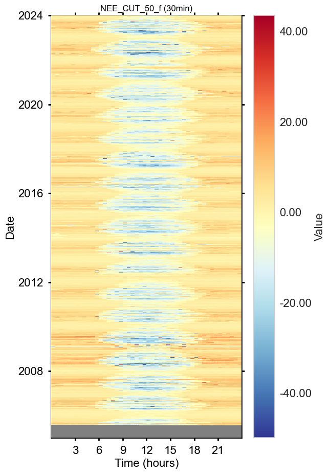
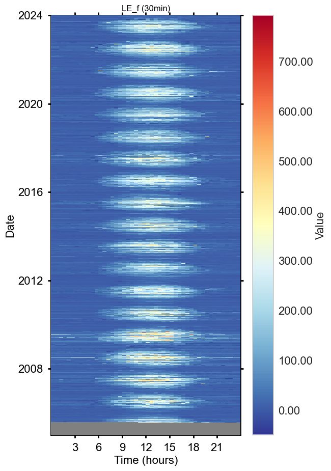
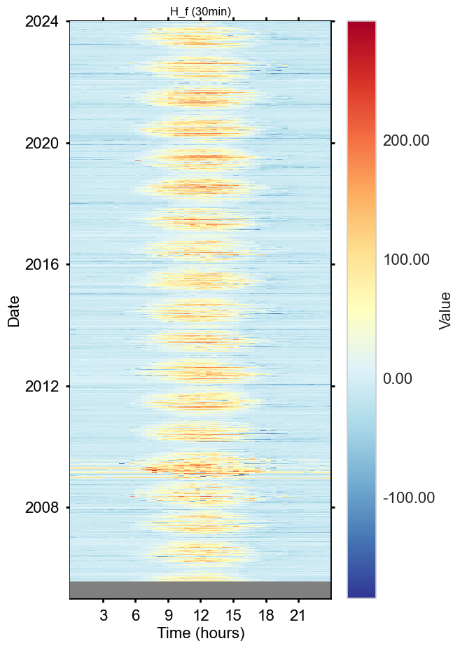
years = [2005, 2008, 2009, 2016]
# years = [2005]
for yr in years:
for f in fluxes_mds:
flagname = f"{f}qc"
loc = (_df.index.year == yr) & (_df[flagname] > 0)
_df.loc[loc, f] = np.nan
for f in fluxes_mds:
HeatmapDateTime(series=_df[f]).plot()
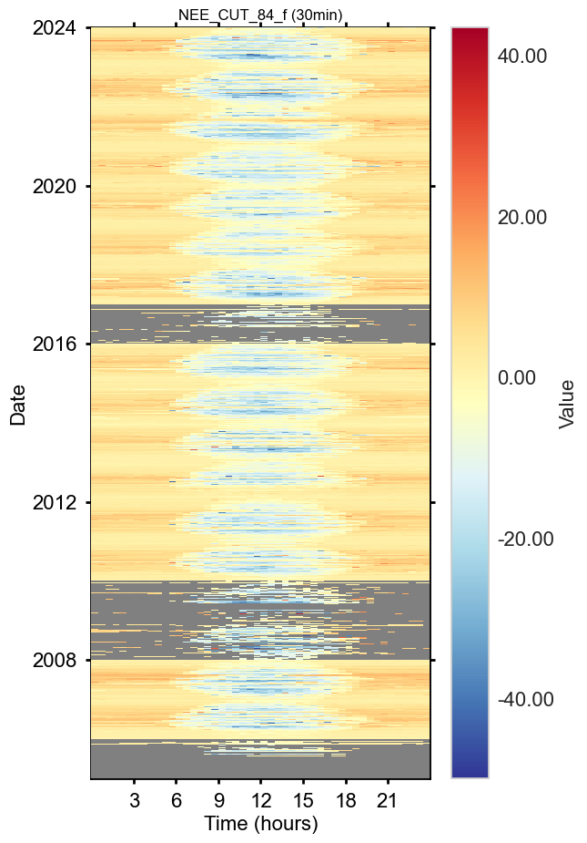
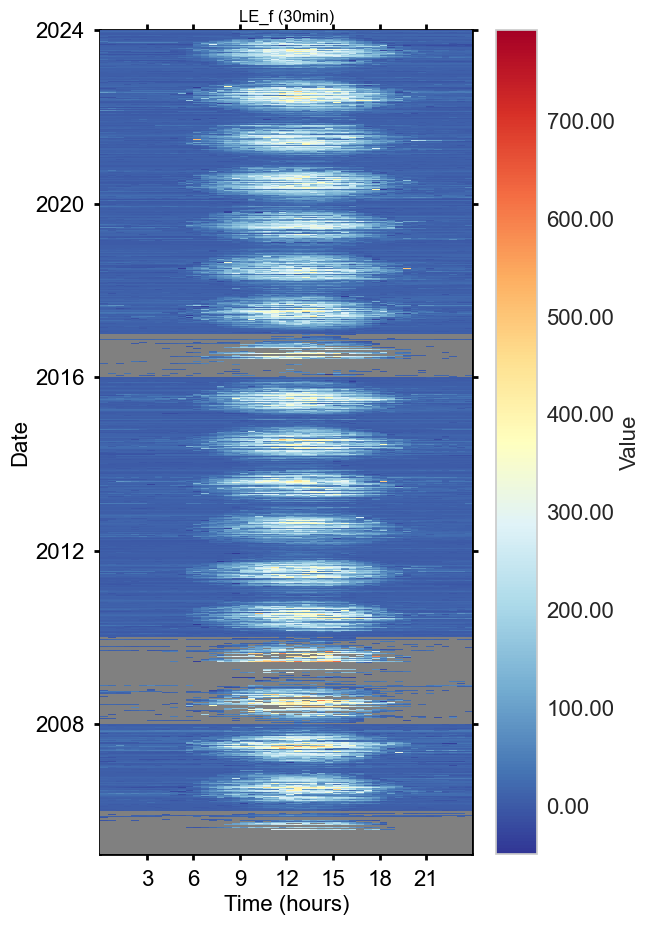
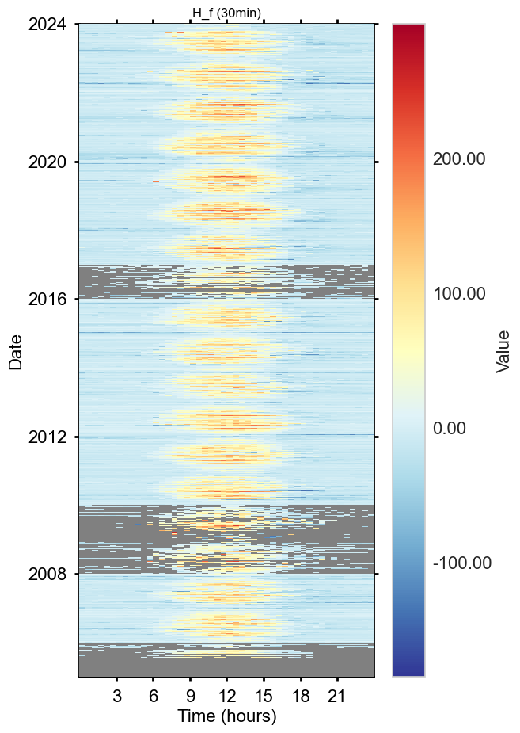
Gap-filling#
Set data range for models#
# Set data range for models
locs_2005 = (_df.index.year >= 2005) & (_df.index.year <= 2007) # Source data for gap-filling 2005: 2005-2007
locs_2008_2009 = (_df.index.year >= 2007) & (_df.index.year <= 2010) # Source data for gap-filling 2008 and 2009: 2007-2010
locs_2016 = (_df.index.year >= 2015) & (_df.index.year <= 2017) # Source data for gap-filling 2005: 2015-2017
Function for random forest execution#
def run(target_col: str, locs, years: list):
# Make subset of required data
USECOLS = [target_col, SWIN_COL, TA_COL, VPD_COL]
USECOLS = USECOLS + MGMT_VARS
subset = _df[locs].copy()
subset = subset[USECOLS].copy()
# Run random forest
rfts = RandomForestTS(
input_df=subset,
target_col=target_col,
**rf_settings)
rfts.reduce_features()
# rfts.report_feature_reduction()
rfts.trainmodel(showplot_scores=False, showplot_importance=False)
# rfts.report_traintest()
rfts.fillgaps(showplot_scores=False, showplot_importance=False)
rfts.report_gapfilling()
# Results
res = rfts.gapfilling_df_
# Results for relevant year(s)
fluxname_filled = rfts.get_gapfilled_target().name
flagname_filled = rfts.get_flag().name
res_year = res[(res.index.year >= years[0]) & (res.index.year <= years[1])].copy()
res_year = res_year[[fluxname_filled, flagname_filled]].copy()
# Heatmaps
fig = plt.figure(facecolor='white', figsize=(10, 12), dpi=72)
gs = gridspec.GridSpec(1, 2) # rows, cols
gs.update(wspace=0.6, hspace=0.1, left=0.03, right=0.97, top=0.95, bottom=0.05)
ax1 = ax_series = fig.add_subplot(gs[0, 0])
ax2 = ax_series = fig.add_subplot(gs[0, 1])
HeatmapDateTime(series=res[target_col], ax=ax1).plot()
HeatmapDateTime(series=res[fluxname_filled], ax=ax2).plot()
return res_year, rfts # Returns results and instance
Dataframe to collect results across years#
collection_df = pd.DataFrame()
collection_instances_dict = {}
NEE#
target_cols = ["NEE_CUT_50_f"]
# target_cols = ["NEE_CUT_50_f", "NEE_CUT_16_f", "NEE_CUT_84_f"]
# target_cols = ["NEE_L3.1_L3.3_CUT_50_QCF", "NEE_L3.1_L3.3_CUT_16_QCF", "NEE_L3.1_L3.3_CUT_84_QCF"]
# target_cols = ["NEE_L3.1_L3.3_CUT_50_QCF"]
for target_col in target_cols:
res_2005, instance_2005 = run(target_col=target_col, locs=locs_2005, years=[2005, 2005])
res_2008_2009, instance_2008_2009 = run(target_col=target_col, locs=locs_2008_2009, years=[2008, 2009])
res_2016, instance_2016 = run(target_col=target_col, locs=locs_2016, years=[2016, 2016])
# Merge results along timestamp index
res_merged = pd.concat([res_2005, res_2008_2009, res_2016], axis=0)
# Add results (gap-filled variable and flag) to collection of results
collection_df = pd.concat([collection_df, res_merged], axis=1) # Add to collection of results, add to existing column
# # Add random forest instance to collection of instances
# collection_instances_dict[str(years[0])] = rfts
============================================================
Starting gap-filling for
NEE_CUT_50_f
using <class 'sklearn.ensemble._forest.RandomForestRegressor'>
============================================================
Adding new data columns ...
++ Added new columns with lagged variants for: ['SW_IN_T1_2_1', 'TA_T1_2_1', 'VPD_T1_2_1'] (lags between -1 and -1 with stepsize 1), no lagged variants for: ['NEE_CUT_50_f', 'TIMESINCE_MGMT_FERT_MIN_FOOTPRINT', 'TIMESINCE_MGMT_FERT_ORG_FOOTPRINT', 'TIMESINCE_MGMT_GRAZING_FOOTPRINT', 'TIMESINCE_MGMT_MOWING_FOOTPRINT', 'TIMESINCE_MGMT_SOILCULTIVATION_FOOTPRINT', 'TIMESINCE_MGMT_SOWING_FOOTPRINT', 'TIMESINCE_MGMT_PESTICIDE_HERBICIDE_FOOTPRINT']. Shifting the time series created gaps which were then filled with the nearest value.
++ Added new columns with timestamp info: ['.YEAR', '.SEASON', '.MONTH', '.WEEK', '.DOY', '.HOUR', '.YEARMONTH', '.YEARDOY', '.YEARWEEK']
++ Added new column .RECORDNUMBER with record numbers from 1 to 52560.
Sanitizing timestamp ...
>>> Validating timestamp naming of timestamp column TIMESTAMP_MIDDLE ... Timestamp name OK.
>>> Converting timestamp TIMESTAMP_MIDDLE to datetime ... OK
>>> All rows have timestamp TIMESTAMP_MIDDLE, no rows removed.
>>> Sorting timestamp TIMESTAMP_MIDDLE ascending ...
>>> Removing data records with duplicate indexes ... OK (no duplicates found in timestamp index)
>>> Creating continuous <30 * Minutes> timestamp index for timestamp TIMESTAMP_MIDDLE between 2005-01-01 00:15:00 and 2007-12-31 23:45:00 ...
Feature reduction based on permutation importance ...
>>> Calculating feature importances (permutation importance, 5 repeats) ...
>>> Setting threshold for feature rejection to 0.008010060622572457.
>>> Removing rejected features from model data ...
Training final model ...
>>> Training model <class 'sklearn.ensemble._forest.RandomForestRegressor'> based on data between 2005-07-27 11:15:00 and 2007-12-31 22:45:00 ...
>>> Fitting model to training data ...
>>> Using model to predict target NEE_CUT_50_f in unseen test data ...
>>> Using model to calculate permutation importance based on unseen test data ...
>>> Calculating prediction scores based on predicting unseen test data of NEE_CUT_50_f ...
>>> Collecting results, details about training and testing can be accessed by calling .report_traintest().
>>> Done.
Gap-filling using final model ...
>>> Using final model on all data to predict target NEE_CUT_50_f ...
>>> Using final model on all data to calculate permutation importance ...
>>> Calculating prediction scores based on all data predicting NEE_CUT_50_f ...
>>> Predicting target NEE_CUT_50_f where all features are available ... predicted 52560 records.
>>> Collecting results for final model ...
>>> Filling 15787 missing records in target with predictions from final model ...
>>> Storing gap-filled time series in variable NEE_CUT_50_f_gfRF ...
>>> Restoring original timestamp in results ...
>>> Combining predictions from full model and fallback model ...
===================
GAP-FILLING RESULTS
===================
Model scores and feature importances were calculated from high-quality predicted targets (15787 values, NEE_CUT_50_f_gfRF where flag=1) in comparison to observed targets (36773 values, NEE_CUT_50_f).
## TARGET
- first timestamp: 2005-01-01 00:15:00
- last timestamp: 2007-12-31 23:45:00
- potential number of values: 52560 values)
- target column (observed): NEE_CUT_50_f
- missing records (observed): 15787 (cross-check from flag: 15787)
- target column (gap-filled): NEE_CUT_50_f_gfRF (52560 values)
- missing records (gap-filled): 0
- gap-filling flag: FLAG_NEE_CUT_50_f_gfRF_ISFILLED
> flag 0 ... observed targets (36773 values)
> flag 1 ... targets gap-filled with high-quality, all features available (15787 values)
> flag 2 ... targets gap-filled with fallback (0 values)
## FEATURE IMPORTANCES
- names of features used in model: ['SW_IN_T1_2_1', 'TIMESINCE_MGMT_MOWING_FOOTPRINT', '.YEARDOY', '.RECORDNUMBER', 'TA_T1_2_1', '.TA_T1_2_1-1', '.SW_IN_T1_2_1-1', '.DOY', '.HOUR', 'VPD_T1_2_1', 'TIMESINCE_MGMT_FERT_ORG_FOOTPRINT', 'TIMESINCE_MGMT_SOWING_FOOTPRINT', '.VPD_T1_2_1-1', 'TIMESINCE_MGMT_SOILCULTIVATION_FOOTPRINT', 'TIMESINCE_MGMT_GRAZING_FOOTPRINT']
- number of features used in model: 15
- permutation importances were calculated from 5 repeats.
PERM_IMPORTANCE PERM_SD
SW_IN_T1_2_1 1.893137 0.011426
TIMESINCE_MGMT_MOWING_FOOTPRINT 0.179443 0.000926
.YEARDOY 0.061616 0.001649
.RECORDNUMBER 0.059302 0.000725
TA_T1_2_1 0.052587 0.000540
.TA_T1_2_1-1 0.042532 0.000732
.SW_IN_T1_2_1-1 0.036218 0.000421
.DOY 0.032422 0.000576
.HOUR 0.030187 0.000581
VPD_T1_2_1 0.021147 0.000466
TIMESINCE_MGMT_FERT_ORG_FOOTPRINT 0.015966 0.000363
TIMESINCE_MGMT_SOWING_FOOTPRINT 0.015876 0.000228
.VPD_T1_2_1-1 0.014053 0.000225
TIMESINCE_MGMT_SOILCULTIVATION_FOOTPRINT 0.013162 0.000211
TIMESINCE_MGMT_GRAZING_FOOTPRINT 0.012933 0.000189
## MODEL
The model was trained on a training set with test size 25.00%.
- estimator: RandomForestRegressor(n_estimators=200, n_jobs=-1, random_state=42)
- parameters: {'bootstrap': True, 'ccp_alpha': 0.0, 'criterion': 'squared_error', 'max_depth': None, 'max_features': 1.0, 'max_leaf_nodes': None, 'max_samples': None, 'min_impurity_decrease': 0.0, 'min_samples_leaf': 1, 'min_samples_split': 2, 'min_weight_fraction_leaf': 0.0, 'monotonic_cst': None, 'n_estimators': 200, 'n_jobs': -1, 'oob_score': False, 'random_state': 42, 'verbose': 0, 'warm_start': False}
## MODEL SCORES
- MAE: 0.6641925555555274 (mean absolute error)
- MedAE: 0.20204950698733704 (median absolute error)
- MSE: 2.348024594012046 (mean squared error)
- RMSE: 1.5323265298271271 (root mean squared error)
- MAXE: 38.09337106016312 (max error)
- MAPE: 0.386 (mean absolute percentage error)
- R2: 0.9656198742867499
============================================================
Starting gap-filling for
NEE_CUT_50_f
using <class 'sklearn.ensemble._forest.RandomForestRegressor'>
============================================================
Adding new data columns ...
++ Added new columns with lagged variants for: ['SW_IN_T1_2_1', 'TA_T1_2_1', 'VPD_T1_2_1'] (lags between -1 and -1 with stepsize 1), no lagged variants for: ['NEE_CUT_50_f', 'TIMESINCE_MGMT_FERT_MIN_FOOTPRINT', 'TIMESINCE_MGMT_FERT_ORG_FOOTPRINT', 'TIMESINCE_MGMT_GRAZING_FOOTPRINT', 'TIMESINCE_MGMT_MOWING_FOOTPRINT', 'TIMESINCE_MGMT_SOILCULTIVATION_FOOTPRINT', 'TIMESINCE_MGMT_SOWING_FOOTPRINT', 'TIMESINCE_MGMT_PESTICIDE_HERBICIDE_FOOTPRINT']. Shifting the time series created gaps which were then filled with the nearest value.
++ Added new columns with timestamp info: ['.YEAR', '.SEASON', '.MONTH', '.WEEK', '.DOY', '.HOUR', '.YEARMONTH', '.YEARDOY', '.YEARWEEK']
++ Added new column .RECORDNUMBER with record numbers from 1 to 70128.
Sanitizing timestamp ...
>>> Validating timestamp naming of timestamp column TIMESTAMP_MIDDLE ... Timestamp name OK.
>>> Converting timestamp TIMESTAMP_MIDDLE to datetime ... OK
>>> All rows have timestamp TIMESTAMP_MIDDLE, no rows removed.
>>> Sorting timestamp TIMESTAMP_MIDDLE ascending ...
>>> Removing data records with duplicate indexes ... OK (no duplicates found in timestamp index)
>>> Creating continuous <30 * Minutes> timestamp index for timestamp TIMESTAMP_MIDDLE between 2007-01-01 00:15:00 and 2010-12-31 23:45:00 ...
Feature reduction based on permutation importance ...
>>> Calculating feature importances (permutation importance, 5 repeats) ...
>>> Setting threshold for feature rejection to 0.011512396848455864.
>>> Removing rejected features from model data ...
Training final model ...
>>> Training model <class 'sklearn.ensemble._forest.RandomForestRegressor'> based on data between 2007-01-01 01:15:00 and 2010-12-31 23:45:00 ...
>>> Fitting model to training data ...
>>> Using model to predict target NEE_CUT_50_f in unseen test data ...
>>> Using model to calculate permutation importance based on unseen test data ...
>>> Calculating prediction scores based on predicting unseen test data of NEE_CUT_50_f ...
>>> Collecting results, details about training and testing can be accessed by calling .report_traintest().
>>> Done.
Gap-filling using final model ...
>>> Using final model on all data to predict target NEE_CUT_50_f ...
>>> Using final model on all data to calculate permutation importance ...
>>> Calculating prediction scores based on all data predicting NEE_CUT_50_f ...
>>> Predicting target NEE_CUT_50_f where all features are available ... predicted 70128 records.
>>> Collecting results for final model ...
>>> Filling 25851 missing records in target with predictions from final model ...
>>> Storing gap-filled time series in variable NEE_CUT_50_f_gfRF ...
>>> Restoring original timestamp in results ...
>>> Combining predictions from full model and fallback model ...
===================
GAP-FILLING RESULTS
===================
Model scores and feature importances were calculated from high-quality predicted targets (25851 values, NEE_CUT_50_f_gfRF where flag=1) in comparison to observed targets (44277 values, NEE_CUT_50_f).
## TARGET
- first timestamp: 2007-01-01 00:15:00
- last timestamp: 2010-12-31 23:45:00
- potential number of values: 70128 values)
- target column (observed): NEE_CUT_50_f
- missing records (observed): 25851 (cross-check from flag: 25851)
- target column (gap-filled): NEE_CUT_50_f_gfRF (70128 values)
- missing records (gap-filled): 0
- gap-filling flag: FLAG_NEE_CUT_50_f_gfRF_ISFILLED
> flag 0 ... observed targets (44277 values)
> flag 1 ... targets gap-filled with high-quality, all features available (25851 values)
> flag 2 ... targets gap-filled with fallback (0 values)
## FEATURE IMPORTANCES
- names of features used in model: ['SW_IN_T1_2_1', 'TIMESINCE_MGMT_MOWING_FOOTPRINT', 'TA_T1_2_1', '.TA_T1_2_1-1', 'VPD_T1_2_1', '.RECORDNUMBER', '.DOY', 'TIMESINCE_MGMT_GRAZING_FOOTPRINT', '.SEASON', '.HOUR', '.SW_IN_T1_2_1-1', '.VPD_T1_2_1-1', 'TIMESINCE_MGMT_FERT_ORG_FOOTPRINT', '.YEARDOY', '.YEARMONTH', 'TIMESINCE_MGMT_SOWING_FOOTPRINT', 'TIMESINCE_MGMT_PESTICIDE_HERBICIDE_FOOTPRINT', 'TIMESINCE_MGMT_SOILCULTIVATION_FOOTPRINT']
- number of features used in model: 18
- permutation importances were calculated from 5 repeats.
PERM_IMPORTANCE PERM_SD
SW_IN_T1_2_1 1.629330 0.003474
TIMESINCE_MGMT_MOWING_FOOTPRINT 0.177972 0.001182
TA_T1_2_1 0.106875 0.002336
.TA_T1_2_1-1 0.055545 0.000864
VPD_T1_2_1 0.040661 0.000611
.RECORDNUMBER 0.040171 0.000399
.DOY 0.035599 0.000535
TIMESINCE_MGMT_GRAZING_FOOTPRINT 0.033522 0.000521
.SEASON 0.031552 0.000766
.HOUR 0.031327 0.000682
.SW_IN_T1_2_1-1 0.029728 0.000154
.VPD_T1_2_1-1 0.027539 0.000325
TIMESINCE_MGMT_FERT_ORG_FOOTPRINT 0.026476 0.000682
.YEARDOY 0.026364 0.000343
.YEARMONTH 0.025988 0.000212
TIMESINCE_MGMT_SOWING_FOOTPRINT 0.020627 0.000395
TIMESINCE_MGMT_PESTICIDE_HERBICIDE_FOOTPRINT 0.010777 0.000200
TIMESINCE_MGMT_SOILCULTIVATION_FOOTPRINT 0.010527 0.000191
## MODEL
The model was trained on a training set with test size 25.00%.
- estimator: RandomForestRegressor(n_estimators=200, n_jobs=-1, random_state=42)
- parameters: {'bootstrap': True, 'ccp_alpha': 0.0, 'criterion': 'squared_error', 'max_depth': None, 'max_features': 1.0, 'max_leaf_nodes': None, 'max_samples': None, 'min_impurity_decrease': 0.0, 'min_samples_leaf': 1, 'min_samples_split': 2, 'min_weight_fraction_leaf': 0.0, 'monotonic_cst': None, 'n_estimators': 200, 'n_jobs': -1, 'oob_score': False, 'random_state': 42, 'verbose': 0, 'warm_start': False}
## MODEL SCORES
- MAE: 0.9248248442100329 (mean absolute error)
- MedAE: 0.3113765563189954 (median absolute error)
- MSE: 4.567984918226472 (mean squared error)
- RMSE: 2.13728447292972 (root mean squared error)
- MAXE: 53.67911307651543 (max error)
- MAPE: 0.414 (mean absolute percentage error)
- R2: 0.9477880765720937
============================================================
Starting gap-filling for
NEE_CUT_50_f
using <class 'sklearn.ensemble._forest.RandomForestRegressor'>
============================================================
Adding new data columns ...
++ Added new columns with lagged variants for: ['SW_IN_T1_2_1', 'TA_T1_2_1', 'VPD_T1_2_1'] (lags between -1 and -1 with stepsize 1), no lagged variants for: ['NEE_CUT_50_f', 'TIMESINCE_MGMT_FERT_MIN_FOOTPRINT', 'TIMESINCE_MGMT_FERT_ORG_FOOTPRINT', 'TIMESINCE_MGMT_GRAZING_FOOTPRINT', 'TIMESINCE_MGMT_MOWING_FOOTPRINT', 'TIMESINCE_MGMT_SOILCULTIVATION_FOOTPRINT', 'TIMESINCE_MGMT_SOWING_FOOTPRINT', 'TIMESINCE_MGMT_PESTICIDE_HERBICIDE_FOOTPRINT']. Shifting the time series created gaps which were then filled with the nearest value.
++ Added new columns with timestamp info: ['.YEAR', '.SEASON', '.MONTH', '.WEEK', '.DOY', '.HOUR', '.YEARMONTH', '.YEARDOY', '.YEARWEEK']
++ Added new column .RECORDNUMBER with record numbers from 1 to 52608.
Sanitizing timestamp ...
>>> Validating timestamp naming of timestamp column TIMESTAMP_MIDDLE ... Timestamp name OK.
>>> Converting timestamp TIMESTAMP_MIDDLE to datetime ... OK
>>> All rows have timestamp TIMESTAMP_MIDDLE, no rows removed.
>>> Sorting timestamp TIMESTAMP_MIDDLE ascending ...
>>> Removing data records with duplicate indexes ... OK (no duplicates found in timestamp index)
>>> Creating continuous <30 * Minutes> timestamp index for timestamp TIMESTAMP_MIDDLE between 2015-01-01 00:15:00 and 2017-12-31 23:45:00 ...
Feature reduction based on permutation importance ...
>>> Calculating feature importances (permutation importance, 5 repeats) ...
>>> Setting threshold for feature rejection to 0.00930777988924134.
>>> Removing rejected features from model data ...
Training final model ...
>>> Training model <class 'sklearn.ensemble._forest.RandomForestRegressor'> based on data between 2015-01-01 00:15:00 and 2017-12-31 23:15:00 ...
>>> Fitting model to training data ...
>>> Using model to predict target NEE_CUT_50_f in unseen test data ...
>>> Using model to calculate permutation importance based on unseen test data ...
>>> Calculating prediction scores based on predicting unseen test data of NEE_CUT_50_f ...
>>> Collecting results, details about training and testing can be accessed by calling .report_traintest().
>>> Done.
Gap-filling using final model ...
>>> Using final model on all data to predict target NEE_CUT_50_f ...
>>> Using final model on all data to calculate permutation importance ...
>>> Calculating prediction scores based on all data predicting NEE_CUT_50_f ...
>>> Predicting target NEE_CUT_50_f where all features are available ... predicted 52608 records.
>>> Collecting results for final model ...
>>> Filling 14413 missing records in target with predictions from final model ...
>>> Storing gap-filled time series in variable NEE_CUT_50_f_gfRF ...
>>> Restoring original timestamp in results ...
>>> Combining predictions from full model and fallback model ...
===================
GAP-FILLING RESULTS
===================
Model scores and feature importances were calculated from high-quality predicted targets (14413 values, NEE_CUT_50_f_gfRF where flag=1) in comparison to observed targets (38195 values, NEE_CUT_50_f).
## TARGET
- first timestamp: 2015-01-01 00:15:00
- last timestamp: 2017-12-31 23:45:00
- potential number of values: 52608 values)
- target column (observed): NEE_CUT_50_f
- missing records (observed): 14413 (cross-check from flag: 14413)
- target column (gap-filled): NEE_CUT_50_f_gfRF (52608 values)
- missing records (gap-filled): 0
- gap-filling flag: FLAG_NEE_CUT_50_f_gfRF_ISFILLED
> flag 0 ... observed targets (38195 values)
> flag 1 ... targets gap-filled with high-quality, all features available (14413 values)
> flag 2 ... targets gap-filled with fallback (0 values)
## FEATURE IMPORTANCES
- names of features used in model: ['SW_IN_T1_2_1', 'TIMESINCE_MGMT_MOWING_FOOTPRINT', '.HOUR', '.DOY', 'TA_T1_2_1', '.RECORDNUMBER', '.YEARWEEK', '.TA_T1_2_1-1', 'TIMESINCE_MGMT_GRAZING_FOOTPRINT', '.SW_IN_T1_2_1-1', '.VPD_T1_2_1-1', 'VPD_T1_2_1', '.YEARDOY', 'TIMESINCE_MGMT_FERT_ORG_FOOTPRINT', '.SEASON', '.WEEK']
- number of features used in model: 16
- permutation importances were calculated from 5 repeats.
PERM_IMPORTANCE PERM_SD
SW_IN_T1_2_1 1.569808 0.007657
TIMESINCE_MGMT_MOWING_FOOTPRINT 0.151669 0.002767
.HOUR 0.069073 0.000620
.DOY 0.066795 0.001345
TA_T1_2_1 0.054378 0.000297
.RECORDNUMBER 0.052184 0.000987
.YEARWEEK 0.044331 0.000910
.TA_T1_2_1-1 0.039740 0.000460
TIMESINCE_MGMT_GRAZING_FOOTPRINT 0.033030 0.000667
.SW_IN_T1_2_1-1 0.024111 0.000253
.VPD_T1_2_1-1 0.020627 0.000240
VPD_T1_2_1 0.016966 0.000168
.YEARDOY 0.016639 0.000263
TIMESINCE_MGMT_FERT_ORG_FOOTPRINT 0.013955 0.000244
.SEASON 0.012303 0.000302
.WEEK 0.011362 0.000620
## MODEL
The model was trained on a training set with test size 25.00%.
- estimator: RandomForestRegressor(n_estimators=200, n_jobs=-1, random_state=42)
- parameters: {'bootstrap': True, 'ccp_alpha': 0.0, 'criterion': 'squared_error', 'max_depth': None, 'max_features': 1.0, 'max_leaf_nodes': None, 'max_samples': None, 'min_impurity_decrease': 0.0, 'min_samples_leaf': 1, 'min_samples_split': 2, 'min_weight_fraction_leaf': 0.0, 'monotonic_cst': None, 'n_estimators': 200, 'n_jobs': -1, 'oob_score': False, 'random_state': 42, 'verbose': 0, 'warm_start': False}
## MODEL SCORES
- MAE: 0.7248600056262181 (mean absolute error)
- MedAE: 0.22632376095381668 (median absolute error)
- MSE: 2.920584280368359 (mean squared error)
- RMSE: 1.7089717026236446 (root mean squared error)
- MAXE: 43.26821382441907 (max error)
- MAPE: 0.678 (mean absolute percentage error)
- R2: 0.9579257418463125
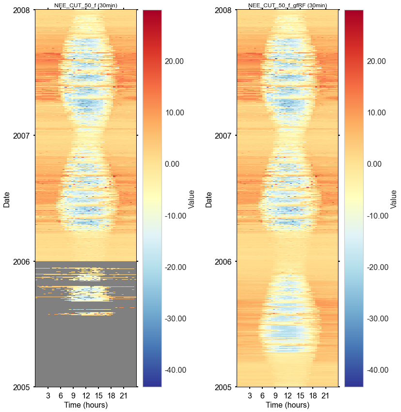
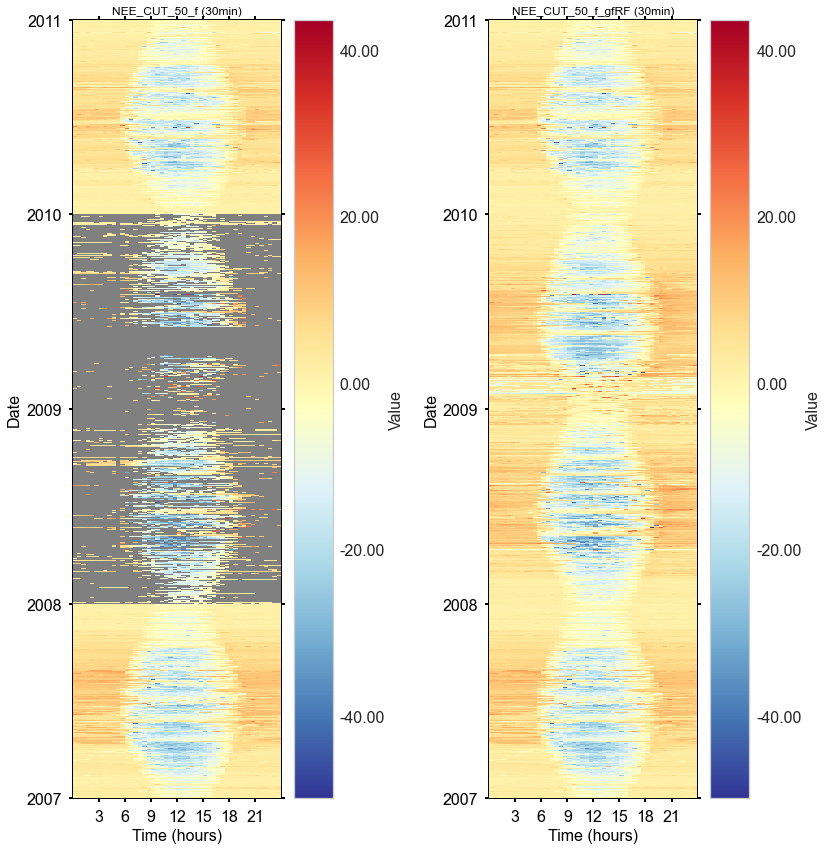
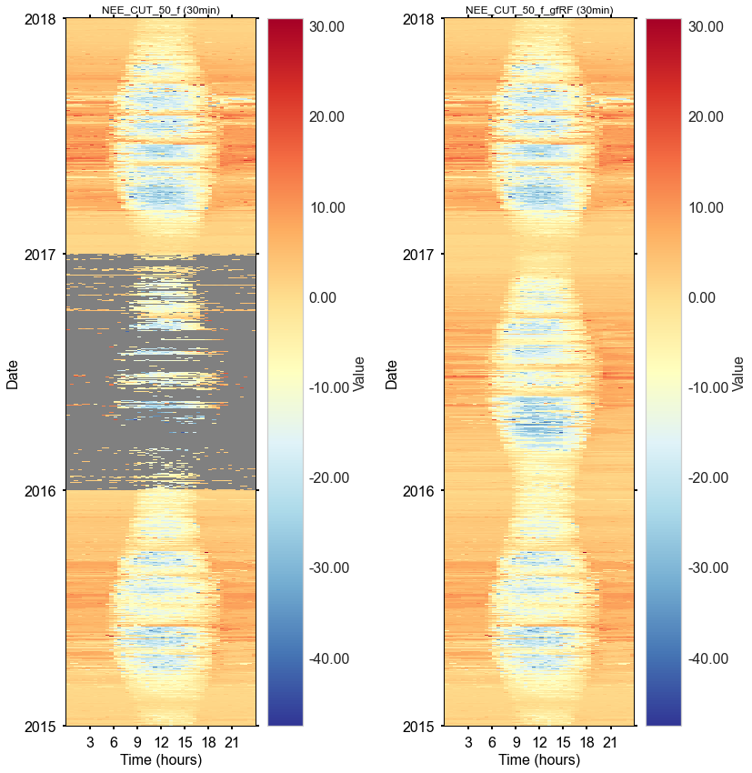
LE#
target_cols = ["LE_f"]
# target_cols = ["LE_L3.1_L3.3_CUT_NONE_QCF"]
for target_col in target_cols:
res_2005, instance_2005 = run(target_col=target_col, locs=locs_2005, years=[2005, 2005])
res_2008_2009, instance_2008_2009 = run(target_col=target_col, locs=locs_2008_2009, years=[2008, 2009])
res_2016, instance_2016 = run(target_col=target_col, locs=locs_2016, years=[2016, 2016])
# Merge results along timestamp index
res_merged = pd.concat([res_2005, res_2008_2009, res_2016], axis=0)
# Add results (gap-filled variable and flag) to collection of results
collection_df = pd.concat([collection_df, res_merged], axis=1) # Add to collection of results, add to existing column
# # Add random forest instance to collection of instances
# collection_instances_dict[str(years[0])] = rfts
============================================================
Starting gap-filling for
LE_f
using <class 'sklearn.ensemble._forest.RandomForestRegressor'>
============================================================
Adding new data columns ...
++ Added new columns with lagged variants for: ['SW_IN_T1_2_1', 'TA_T1_2_1', 'VPD_T1_2_1'] (lags between -1 and -1 with stepsize 1), no lagged variants for: ['LE_f', 'TIMESINCE_MGMT_FERT_MIN_FOOTPRINT', 'TIMESINCE_MGMT_FERT_ORG_FOOTPRINT', 'TIMESINCE_MGMT_GRAZING_FOOTPRINT', 'TIMESINCE_MGMT_MOWING_FOOTPRINT', 'TIMESINCE_MGMT_SOILCULTIVATION_FOOTPRINT', 'TIMESINCE_MGMT_SOWING_FOOTPRINT', 'TIMESINCE_MGMT_PESTICIDE_HERBICIDE_FOOTPRINT']. Shifting the time series created gaps which were then filled with the nearest value.
++ Added new columns with timestamp info: ['.YEAR', '.SEASON', '.MONTH', '.WEEK', '.DOY', '.HOUR', '.YEARMONTH', '.YEARDOY', '.YEARWEEK']
++ Added new column .RECORDNUMBER with record numbers from 1 to 52560.
Sanitizing timestamp ...
>>> Validating timestamp naming of timestamp column TIMESTAMP_MIDDLE ... Timestamp name OK.
>>> Converting timestamp TIMESTAMP_MIDDLE to datetime ... OK
>>> All rows have timestamp TIMESTAMP_MIDDLE, no rows removed.
>>> Sorting timestamp TIMESTAMP_MIDDLE ascending ...
>>> Removing data records with duplicate indexes ... OK (no duplicates found in timestamp index)
>>> Creating continuous <30 * Minutes> timestamp index for timestamp TIMESTAMP_MIDDLE between 2005-01-01 00:15:00 and 2007-12-31 23:45:00 ...
Feature reduction based on permutation importance ...
>>> Calculating feature importances (permutation importance, 5 repeats) ...
>>> Setting threshold for feature rejection to 0.005002088456295728.
>>> Removing rejected features from model data ...
Training final model ...
>>> Training model <class 'sklearn.ensemble._forest.RandomForestRegressor'> based on data between 2005-07-27 11:15:00 and 2007-12-31 22:45:00 ...
>>> Fitting model to training data ...
>>> Using model to predict target LE_f in unseen test data ...
>>> Using model to calculate permutation importance based on unseen test data ...
>>> Calculating prediction scores based on predicting unseen test data of LE_f ...
>>> Collecting results, details about training and testing can be accessed by calling .report_traintest().
>>> Done.
Gap-filling using final model ...
>>> Using final model on all data to predict target LE_f ...
>>> Using final model on all data to calculate permutation importance ...
>>> Calculating prediction scores based on all data predicting LE_f ...
>>> Predicting target LE_f where all features are available ... predicted 52560 records.
>>> Collecting results for final model ...
>>> Filling 15546 missing records in target with predictions from final model ...
>>> Storing gap-filled time series in variable LE_f_gfRF ...
>>> Restoring original timestamp in results ...
>>> Combining predictions from full model and fallback model ...
===================
GAP-FILLING RESULTS
===================
Model scores and feature importances were calculated from high-quality predicted targets (15546 values, LE_f_gfRF where flag=1) in comparison to observed targets (37014 values, LE_f).
## TARGET
- first timestamp: 2005-01-01 00:15:00
- last timestamp: 2007-12-31 23:45:00
- potential number of values: 52560 values)
- target column (observed): LE_f
- missing records (observed): 15546 (cross-check from flag: 15546)
- target column (gap-filled): LE_f_gfRF (52560 values)
- missing records (gap-filled): 0
- gap-filling flag: FLAG_LE_f_gfRF_ISFILLED
> flag 0 ... observed targets (37014 values)
> flag 1 ... targets gap-filled with high-quality, all features available (15546 values)
> flag 2 ... targets gap-filled with fallback (0 values)
## FEATURE IMPORTANCES
- names of features used in model: ['SW_IN_T1_2_1', 'TA_T1_2_1', '.TA_T1_2_1-1', 'TIMESINCE_MGMT_MOWING_FOOTPRINT', '.RECORDNUMBER', '.SW_IN_T1_2_1-1', '.DOY', 'VPD_T1_2_1', '.YEARDOY', '.VPD_T1_2_1-1', '.SEASON', '.HOUR', 'TIMESINCE_MGMT_FERT_ORG_FOOTPRINT', 'TIMESINCE_MGMT_GRAZING_FOOTPRINT', 'TIMESINCE_MGMT_SOILCULTIVATION_FOOTPRINT', 'TIMESINCE_MGMT_SOWING_FOOTPRINT']
- number of features used in model: 16
- permutation importances were calculated from 5 repeats.
PERM_IMPORTANCE PERM_SD
SW_IN_T1_2_1 0.998381 0.006298
TA_T1_2_1 0.041896 0.000537
.TA_T1_2_1-1 0.036834 0.000411
TIMESINCE_MGMT_MOWING_FOOTPRINT 0.027697 0.000486
.RECORDNUMBER 0.025877 0.000235
.SW_IN_T1_2_1-1 0.024713 0.000199
.DOY 0.019668 0.000527
VPD_T1_2_1 0.018106 0.000220
.YEARDOY 0.016293 0.000218
.VPD_T1_2_1-1 0.013799 0.000111
.SEASON 0.010284 0.000691
.HOUR 0.010078 0.000266
TIMESINCE_MGMT_FERT_ORG_FOOTPRINT 0.010066 0.000146
TIMESINCE_MGMT_GRAZING_FOOTPRINT 0.008184 0.000079
TIMESINCE_MGMT_SOILCULTIVATION_FOOTPRINT 0.007421 0.000117
TIMESINCE_MGMT_SOWING_FOOTPRINT 0.005197 0.000045
## MODEL
The model was trained on a training set with test size 25.00%.
- estimator: RandomForestRegressor(n_estimators=200, n_jobs=-1, random_state=42)
- parameters: {'bootstrap': True, 'ccp_alpha': 0.0, 'criterion': 'squared_error', 'max_depth': None, 'max_features': 1.0, 'max_leaf_nodes': None, 'max_samples': None, 'min_impurity_decrease': 0.0, 'min_samples_leaf': 1, 'min_samples_split': 2, 'min_weight_fraction_leaf': 0.0, 'monotonic_cst': None, 'n_estimators': 200, 'n_jobs': -1, 'oob_score': False, 'random_state': 42, 'verbose': 0, 'warm_start': False}
## MODEL SCORES
- MAE: 5.6056053118445 (mean absolute error)
- MedAE: 1.4954036711390417 (median absolute error)
- MSE: 165.23509543197616 (mean squared error)
- RMSE: 12.8543803986025 (root mean squared error)
- MAXE: 286.82824325327755 (max error)
- MAPE: 0.449 (mean absolute percentage error)
- R2: 0.9762097142655236
============================================================
Starting gap-filling for
LE_f
using <class 'sklearn.ensemble._forest.RandomForestRegressor'>
============================================================
Adding new data columns ...
++ Added new columns with lagged variants for: ['SW_IN_T1_2_1', 'TA_T1_2_1', 'VPD_T1_2_1'] (lags between -1 and -1 with stepsize 1), no lagged variants for: ['LE_f', 'TIMESINCE_MGMT_FERT_MIN_FOOTPRINT', 'TIMESINCE_MGMT_FERT_ORG_FOOTPRINT', 'TIMESINCE_MGMT_GRAZING_FOOTPRINT', 'TIMESINCE_MGMT_MOWING_FOOTPRINT', 'TIMESINCE_MGMT_SOILCULTIVATION_FOOTPRINT', 'TIMESINCE_MGMT_SOWING_FOOTPRINT', 'TIMESINCE_MGMT_PESTICIDE_HERBICIDE_FOOTPRINT']. Shifting the time series created gaps which were then filled with the nearest value.
++ Added new columns with timestamp info: ['.YEAR', '.SEASON', '.MONTH', '.WEEK', '.DOY', '.HOUR', '.YEARMONTH', '.YEARDOY', '.YEARWEEK']
++ Added new column .RECORDNUMBER with record numbers from 1 to 70128.
Sanitizing timestamp ...
>>> Validating timestamp naming of timestamp column TIMESTAMP_MIDDLE ... Timestamp name OK.
>>> Converting timestamp TIMESTAMP_MIDDLE to datetime ... OK
>>> All rows have timestamp TIMESTAMP_MIDDLE, no rows removed.
>>> Sorting timestamp TIMESTAMP_MIDDLE ascending ...
>>> Removing data records with duplicate indexes ... OK (no duplicates found in timestamp index)
>>> Creating continuous <30 * Minutes> timestamp index for timestamp TIMESTAMP_MIDDLE between 2007-01-01 00:15:00 and 2010-12-31 23:45:00 ...
Feature reduction based on permutation importance ...
>>> Calculating feature importances (permutation importance, 5 repeats) ...
>>> Setting threshold for feature rejection to 0.008163960742913302.
>>> Removing rejected features from model data ...
Training final model ...
>>> Training model <class 'sklearn.ensemble._forest.RandomForestRegressor'> based on data between 2007-01-01 01:15:00 and 2010-12-31 23:45:00 ...
>>> Fitting model to training data ...
>>> Using model to predict target LE_f in unseen test data ...
>>> Using model to calculate permutation importance based on unseen test data ...
>>> Calculating prediction scores based on predicting unseen test data of LE_f ...
>>> Collecting results, details about training and testing can be accessed by calling .report_traintest().
>>> Done.
Gap-filling using final model ...
>>> Using final model on all data to predict target LE_f ...
>>> Using final model on all data to calculate permutation importance ...
>>> Calculating prediction scores based on all data predicting LE_f ...
>>> Predicting target LE_f where all features are available ... predicted 70128 records.
>>> Collecting results for final model ...
>>> Filling 25102 missing records in target with predictions from final model ...
>>> Storing gap-filled time series in variable LE_f_gfRF ...
>>> Restoring original timestamp in results ...
>>> Combining predictions from full model and fallback model ...
===================
GAP-FILLING RESULTS
===================
Model scores and feature importances were calculated from high-quality predicted targets (25102 values, LE_f_gfRF where flag=1) in comparison to observed targets (45026 values, LE_f).
## TARGET
- first timestamp: 2007-01-01 00:15:00
- last timestamp: 2010-12-31 23:45:00
- potential number of values: 70128 values)
- target column (observed): LE_f
- missing records (observed): 25102 (cross-check from flag: 25102)
- target column (gap-filled): LE_f_gfRF (70128 values)
- missing records (gap-filled): 0
- gap-filling flag: FLAG_LE_f_gfRF_ISFILLED
> flag 0 ... observed targets (45026 values)
> flag 1 ... targets gap-filled with high-quality, all features available (25102 values)
> flag 2 ... targets gap-filled with fallback (0 values)
## FEATURE IMPORTANCES
- names of features used in model: ['SW_IN_T1_2_1', '.TA_T1_2_1-1', '.SW_IN_T1_2_1-1', 'TA_T1_2_1', '.YEARMONTH', '.DOY', 'VPD_T1_2_1', '.RECORDNUMBER', 'TIMESINCE_MGMT_MOWING_FOOTPRINT', 'TIMESINCE_MGMT_FERT_ORG_FOOTPRINT', '.YEARDOY', '.VPD_T1_2_1-1', 'TIMESINCE_MGMT_SOWING_FOOTPRINT', 'TIMESINCE_MGMT_PESTICIDE_HERBICIDE_FOOTPRINT', 'TIMESINCE_MGMT_GRAZING_FOOTPRINT', '.HOUR']
- number of features used in model: 16
- permutation importances were calculated from 5 repeats.
PERM_IMPORTANCE PERM_SD
SW_IN_T1_2_1 0.851864 0.006164
.TA_T1_2_1-1 0.081443 0.001061
.SW_IN_T1_2_1-1 0.056402 0.000515
TA_T1_2_1 0.046177 0.000984
.YEARMONTH 0.043764 0.001068
.DOY 0.029847 0.000486
VPD_T1_2_1 0.025554 0.000289
.RECORDNUMBER 0.024907 0.000418
TIMESINCE_MGMT_MOWING_FOOTPRINT 0.023369 0.000523
TIMESINCE_MGMT_FERT_ORG_FOOTPRINT 0.021527 0.000333
.YEARDOY 0.019675 0.000259
.VPD_T1_2_1-1 0.013253 0.000144
TIMESINCE_MGMT_SOWING_FOOTPRINT 0.011832 0.000218
TIMESINCE_MGMT_PESTICIDE_HERBICIDE_FOOTPRINT 0.011399 0.000121
TIMESINCE_MGMT_GRAZING_FOOTPRINT 0.011273 0.000161
.HOUR 0.009154 0.000136
## MODEL
The model was trained on a training set with test size 25.00%.
- estimator: RandomForestRegressor(n_estimators=200, n_jobs=-1, random_state=42)
- parameters: {'bootstrap': True, 'ccp_alpha': 0.0, 'criterion': 'squared_error', 'max_depth': None, 'max_features': 1.0, 'max_leaf_nodes': None, 'max_samples': None, 'min_impurity_decrease': 0.0, 'min_samples_leaf': 1, 'min_samples_split': 2, 'min_weight_fraction_leaf': 0.0, 'monotonic_cst': None, 'n_estimators': 200, 'n_jobs': -1, 'oob_score': False, 'random_state': 42, 'verbose': 0, 'warm_start': False}
## MODEL SCORES
- MAE: 7.607703697945107 (mean absolute error)
- MedAE: 2.212442885111101 (median absolute error)
- MSE: 315.447557671924 (mean squared error)
- RMSE: 17.7608433829006 (root mean squared error)
- MAXE: 523.5611976641665 (max error)
- MAPE: 0.508 (mean absolute percentage error)
- R2: 0.965171203092634
============================================================
Starting gap-filling for
LE_f
using <class 'sklearn.ensemble._forest.RandomForestRegressor'>
============================================================
Adding new data columns ...
++ Added new columns with lagged variants for: ['SW_IN_T1_2_1', 'TA_T1_2_1', 'VPD_T1_2_1'] (lags between -1 and -1 with stepsize 1), no lagged variants for: ['LE_f', 'TIMESINCE_MGMT_FERT_MIN_FOOTPRINT', 'TIMESINCE_MGMT_FERT_ORG_FOOTPRINT', 'TIMESINCE_MGMT_GRAZING_FOOTPRINT', 'TIMESINCE_MGMT_MOWING_FOOTPRINT', 'TIMESINCE_MGMT_SOILCULTIVATION_FOOTPRINT', 'TIMESINCE_MGMT_SOWING_FOOTPRINT', 'TIMESINCE_MGMT_PESTICIDE_HERBICIDE_FOOTPRINT']. Shifting the time series created gaps which were then filled with the nearest value.
++ Added new columns with timestamp info: ['.YEAR', '.SEASON', '.MONTH', '.WEEK', '.DOY', '.HOUR', '.YEARMONTH', '.YEARDOY', '.YEARWEEK']
++ Added new column .RECORDNUMBER with record numbers from 1 to 52608.
Sanitizing timestamp ...
>>> Validating timestamp naming of timestamp column TIMESTAMP_MIDDLE ... Timestamp name OK.
>>> Converting timestamp TIMESTAMP_MIDDLE to datetime ... OK
>>> All rows have timestamp TIMESTAMP_MIDDLE, no rows removed.
>>> Sorting timestamp TIMESTAMP_MIDDLE ascending ...
>>> Removing data records with duplicate indexes ... OK (no duplicates found in timestamp index)
>>> Creating continuous <30 * Minutes> timestamp index for timestamp TIMESTAMP_MIDDLE between 2015-01-01 00:15:00 and 2017-12-31 23:45:00 ...
Feature reduction based on permutation importance ...
>>> Calculating feature importances (permutation importance, 5 repeats) ...
>>> Setting threshold for feature rejection to 0.00690523139205792.
>>> Removing rejected features from model data ...
Training final model ...
>>> Training model <class 'sklearn.ensemble._forest.RandomForestRegressor'> based on data between 2015-01-01 00:15:00 and 2017-12-31 23:45:00 ...
>>> Fitting model to training data ...
>>> Using model to predict target LE_f in unseen test data ...
>>> Using model to calculate permutation importance based on unseen test data ...
>>> Calculating prediction scores based on predicting unseen test data of LE_f ...
>>> Collecting results, details about training and testing can be accessed by calling .report_traintest().
>>> Done.
Gap-filling using final model ...
>>> Using final model on all data to predict target LE_f ...
>>> Using final model on all data to calculate permutation importance ...
>>> Calculating prediction scores based on all data predicting LE_f ...
>>> Predicting target LE_f where all features are available ... predicted 52608 records.
>>> Collecting results for final model ...
>>> Filling 13844 missing records in target with predictions from final model ...
>>> Storing gap-filled time series in variable LE_f_gfRF ...
>>> Restoring original timestamp in results ...
>>> Combining predictions from full model and fallback model ...
===================
GAP-FILLING RESULTS
===================
Model scores and feature importances were calculated from high-quality predicted targets (13844 values, LE_f_gfRF where flag=1) in comparison to observed targets (38764 values, LE_f).
## TARGET
- first timestamp: 2015-01-01 00:15:00
- last timestamp: 2017-12-31 23:45:00
- potential number of values: 52608 values)
- target column (observed): LE_f
- missing records (observed): 13844 (cross-check from flag: 13844)
- target column (gap-filled): LE_f_gfRF (52608 values)
- missing records (gap-filled): 0
- gap-filling flag: FLAG_LE_f_gfRF_ISFILLED
> flag 0 ... observed targets (38764 values)
> flag 1 ... targets gap-filled with high-quality, all features available (13844 values)
> flag 2 ... targets gap-filled with fallback (0 values)
## FEATURE IMPORTANCES
- names of features used in model: ['SW_IN_T1_2_1', '.TA_T1_2_1-1', '.DOY', 'TA_T1_2_1', 'VPD_T1_2_1', '.SW_IN_T1_2_1-1', '.RECORDNUMBER', '.VPD_T1_2_1-1', 'TIMESINCE_MGMT_MOWING_FOOTPRINT', '.HOUR']
- number of features used in model: 10
- permutation importances were calculated from 5 repeats.
PERM_IMPORTANCE PERM_SD
SW_IN_T1_2_1 0.926527 0.007000
.TA_T1_2_1-1 0.051337 0.000722
.DOY 0.048015 0.000582
TA_T1_2_1 0.039714 0.000773
VPD_T1_2_1 0.033235 0.000426
.SW_IN_T1_2_1-1 0.031373 0.000763
.RECORDNUMBER 0.031187 0.000392
.VPD_T1_2_1-1 0.022794 0.000365
TIMESINCE_MGMT_MOWING_FOOTPRINT 0.022733 0.000159
.HOUR 0.017112 0.000509
## MODEL
The model was trained on a training set with test size 25.00%.
- estimator: RandomForestRegressor(n_estimators=200, n_jobs=-1, random_state=42)
- parameters: {'bootstrap': True, 'ccp_alpha': 0.0, 'criterion': 'squared_error', 'max_depth': None, 'max_features': 1.0, 'max_leaf_nodes': None, 'max_samples': None, 'min_impurity_decrease': 0.0, 'min_samples_leaf': 1, 'min_samples_split': 2, 'min_weight_fraction_leaf': 0.0, 'monotonic_cst': None, 'n_estimators': 200, 'n_jobs': -1, 'oob_score': False, 'random_state': 42, 'verbose': 0, 'warm_start': False}
## MODEL SCORES
- MAE: 5.65284789708542 (mean absolute error)
- MedAE: 1.46601628005752 (median absolute error)
- MSE: 185.19281556331148 (mean squared error)
- RMSE: 13.608556703901831 (root mean squared error)
- MAXE: 677.3844541878899 (max error)
- MAPE: 0.395 (mean absolute percentage error)
- R2: 0.9717891590693529
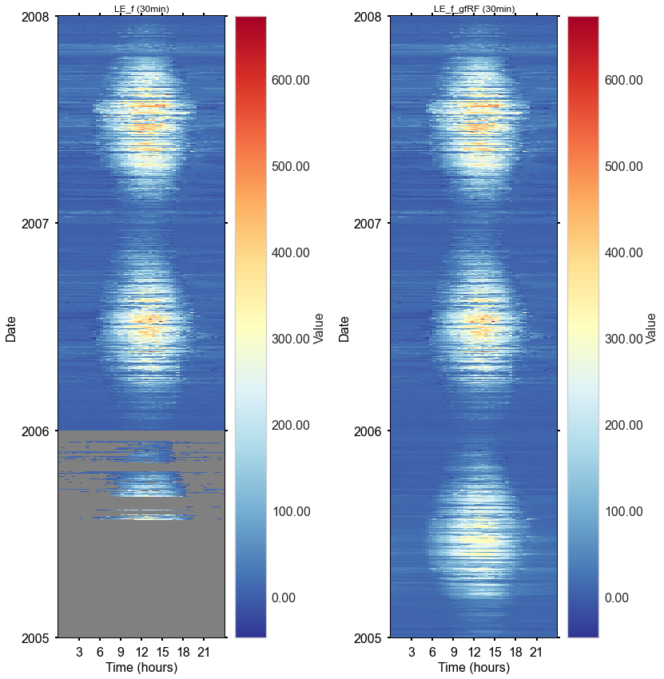
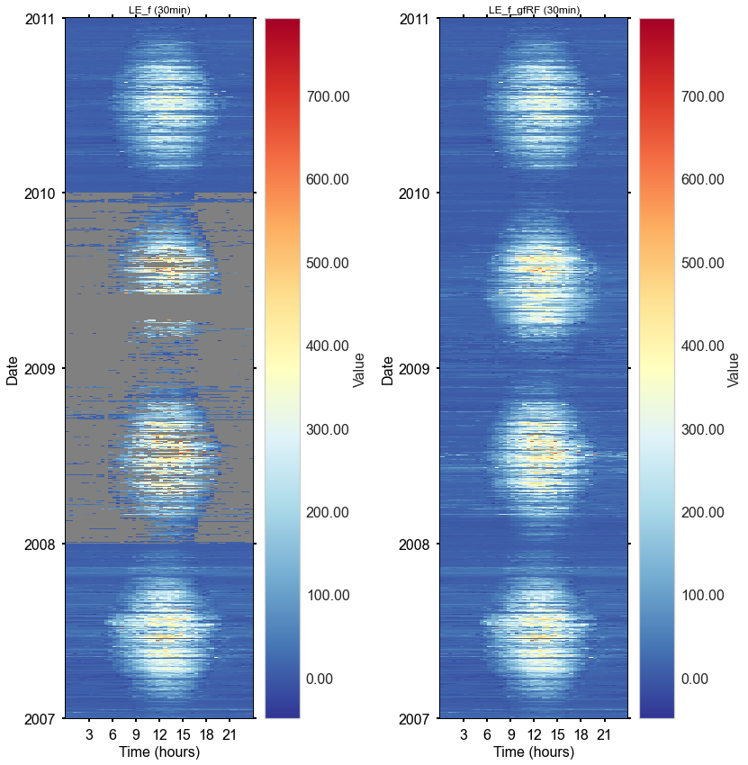
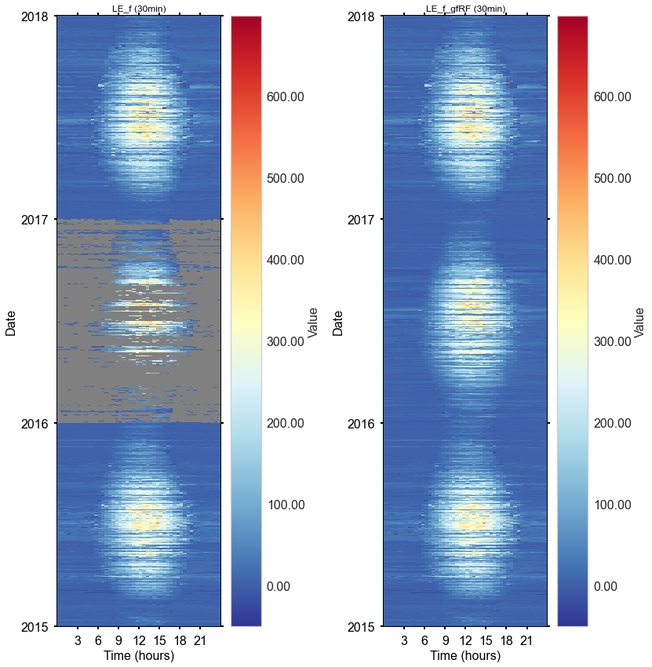
H#
target_cols = ["H_f"]
# target_cols = ["H_L3.1_L3.3_CUT_NONE_QCF"]
for target_col in target_cols:
res_2005, instance_2005 = run(target_col=target_col, locs=locs_2005, years=[2005, 2005])
res_2008_2009, instance_2008_2009 = run(target_col=target_col, locs=locs_2008_2009, years=[2008, 2009])
res_2016, instance_2016 = run(target_col=target_col, locs=locs_2016, years=[2016, 2016])
# Merge results along timestamp index
res_merged = pd.concat([res_2005, res_2008_2009, res_2016], axis=0)
# Add results (gap-filled variable and flag) to collection of results
collection_df = pd.concat([collection_df, res_merged], axis=1) # Add to collection of results, add to existing column
# # Add random forest instance to collection of instances
# collection_instances_dict[str(years[0])] = rfts
============================================================
Starting gap-filling for
H_f
using <class 'sklearn.ensemble._forest.RandomForestRegressor'>
============================================================
Adding new data columns ...
++ Added new columns with lagged variants for: ['SW_IN_T1_2_1', 'TA_T1_2_1', 'VPD_T1_2_1'] (lags between -1 and -1 with stepsize 1), no lagged variants for: ['H_f', 'TIMESINCE_MGMT_FERT_MIN_FOOTPRINT', 'TIMESINCE_MGMT_FERT_ORG_FOOTPRINT', 'TIMESINCE_MGMT_GRAZING_FOOTPRINT', 'TIMESINCE_MGMT_MOWING_FOOTPRINT', 'TIMESINCE_MGMT_SOILCULTIVATION_FOOTPRINT', 'TIMESINCE_MGMT_SOWING_FOOTPRINT', 'TIMESINCE_MGMT_PESTICIDE_HERBICIDE_FOOTPRINT']. Shifting the time series created gaps which were then filled with the nearest value.
++ Added new columns with timestamp info: ['.YEAR', '.SEASON', '.MONTH', '.WEEK', '.DOY', '.HOUR', '.YEARMONTH', '.YEARDOY', '.YEARWEEK']
++ Added new column .RECORDNUMBER with record numbers from 1 to 52560.
Sanitizing timestamp ...
>>> Validating timestamp naming of timestamp column TIMESTAMP_MIDDLE ... Timestamp name OK.
>>> Converting timestamp TIMESTAMP_MIDDLE to datetime ... OK
>>> All rows have timestamp TIMESTAMP_MIDDLE, no rows removed.
>>> Sorting timestamp TIMESTAMP_MIDDLE ascending ...
>>> Removing data records with duplicate indexes ... OK (no duplicates found in timestamp index)
>>> Creating continuous <30 * Minutes> timestamp index for timestamp TIMESTAMP_MIDDLE between 2005-01-01 00:15:00 and 2007-12-31 23:45:00 ...
Feature reduction based on permutation importance ...
>>> Calculating feature importances (permutation importance, 5 repeats) ...
>>> Setting threshold for feature rejection to 0.007198546109544868.
>>> Removing rejected features from model data ...
Training final model ...
>>> Training model <class 'sklearn.ensemble._forest.RandomForestRegressor'> based on data between 2005-07-26 16:15:00 and 2007-12-31 22:45:00 ...
>>> Fitting model to training data ...
>>> Using model to predict target H_f in unseen test data ...
>>> Using model to calculate permutation importance based on unseen test data ...
>>> Calculating prediction scores based on predicting unseen test data of H_f ...
>>> Collecting results, details about training and testing can be accessed by calling .report_traintest().
>>> Done.
Gap-filling using final model ...
>>> Using final model on all data to predict target H_f ...
>>> Using final model on all data to calculate permutation importance ...
>>> Calculating prediction scores based on all data predicting H_f ...
>>> Predicting target H_f where all features are available ... predicted 52560 records.
>>> Collecting results for final model ...
>>> Filling 15398 missing records in target with predictions from final model ...
>>> Storing gap-filled time series in variable H_f_gfRF ...
>>> Restoring original timestamp in results ...
>>> Combining predictions from full model and fallback model ...
===================
GAP-FILLING RESULTS
===================
Model scores and feature importances were calculated from high-quality predicted targets (15398 values, H_f_gfRF where flag=1) in comparison to observed targets (37162 values, H_f).
## TARGET
- first timestamp: 2005-01-01 00:15:00
- last timestamp: 2007-12-31 23:45:00
- potential number of values: 52560 values)
- target column (observed): H_f
- missing records (observed): 15398 (cross-check from flag: 15398)
- target column (gap-filled): H_f_gfRF (52560 values)
- missing records (gap-filled): 0
- gap-filling flag: FLAG_H_f_gfRF_ISFILLED
> flag 0 ... observed targets (37162 values)
> flag 1 ... targets gap-filled with high-quality, all features available (15398 values)
> flag 2 ... targets gap-filled with fallback (0 values)
## FEATURE IMPORTANCES
- names of features used in model: ['SW_IN_T1_2_1', '.VPD_T1_2_1-1', 'TA_T1_2_1', '.TA_T1_2_1-1', '.DOY', 'VPD_T1_2_1', 'TIMESINCE_MGMT_MOWING_FOOTPRINT', '.YEARDOY', 'TIMESINCE_MGMT_GRAZING_FOOTPRINT', '.HOUR', '.RECORDNUMBER', 'TIMESINCE_MGMT_FERT_ORG_FOOTPRINT', '.SW_IN_T1_2_1-1', 'TIMESINCE_MGMT_SOILCULTIVATION_FOOTPRINT', 'TIMESINCE_MGMT_PESTICIDE_HERBICIDE_FOOTPRINT', 'TIMESINCE_MGMT_SOWING_FOOTPRINT']
- number of features used in model: 16
- permutation importances were calculated from 5 repeats.
PERM_IMPORTANCE PERM_SD
SW_IN_T1_2_1 2.286622 0.005036
.VPD_T1_2_1-1 0.124319 0.001588
TA_T1_2_1 0.091134 0.000975
.TA_T1_2_1-1 0.070088 0.000681
.DOY 0.058927 0.000517
VPD_T1_2_1 0.057899 0.000377
TIMESINCE_MGMT_MOWING_FOOTPRINT 0.056634 0.000851
.YEARDOY 0.046740 0.001419
TIMESINCE_MGMT_GRAZING_FOOTPRINT 0.027164 0.000353
.HOUR 0.025093 0.000481
.RECORDNUMBER 0.023571 0.000169
TIMESINCE_MGMT_FERT_ORG_FOOTPRINT 0.016776 0.000395
.SW_IN_T1_2_1-1 0.014747 0.000144
TIMESINCE_MGMT_SOILCULTIVATION_FOOTPRINT 0.014168 0.000325
TIMESINCE_MGMT_PESTICIDE_HERBICIDE_FOOTPRINT 0.009839 0.000227
TIMESINCE_MGMT_SOWING_FOOTPRINT 0.007880 0.000071
## MODEL
The model was trained on a training set with test size 25.00%.
- estimator: RandomForestRegressor(n_estimators=200, n_jobs=-1, random_state=42)
- parameters: {'bootstrap': True, 'ccp_alpha': 0.0, 'criterion': 'squared_error', 'max_depth': None, 'max_features': 1.0, 'max_leaf_nodes': None, 'max_samples': None, 'min_impurity_decrease': 0.0, 'min_samples_leaf': 1, 'min_samples_split': 2, 'min_weight_fraction_leaf': 0.0, 'monotonic_cst': None, 'n_estimators': 200, 'n_jobs': -1, 'oob_score': False, 'random_state': 42, 'verbose': 0, 'warm_start': False}
## MODEL SCORES
- MAE: 3.0363481016781413 (mean absolute error)
- MedAE: 1.2275314965263107 (median absolute error)
- MSE: 35.308167649439106 (mean squared error)
- RMSE: 5.94206762410519 (root mean squared error)
- MAXE: 123.18003992941935 (max error)
- MAPE: 1.716 (mean absolute percentage error)
- R2: 0.9659718161914362
============================================================
Starting gap-filling for
H_f
using <class 'sklearn.ensemble._forest.RandomForestRegressor'>
============================================================
Adding new data columns ...
++ Added new columns with lagged variants for: ['SW_IN_T1_2_1', 'TA_T1_2_1', 'VPD_T1_2_1'] (lags between -1 and -1 with stepsize 1), no lagged variants for: ['H_f', 'TIMESINCE_MGMT_FERT_MIN_FOOTPRINT', 'TIMESINCE_MGMT_FERT_ORG_FOOTPRINT', 'TIMESINCE_MGMT_GRAZING_FOOTPRINT', 'TIMESINCE_MGMT_MOWING_FOOTPRINT', 'TIMESINCE_MGMT_SOILCULTIVATION_FOOTPRINT', 'TIMESINCE_MGMT_SOWING_FOOTPRINT', 'TIMESINCE_MGMT_PESTICIDE_HERBICIDE_FOOTPRINT']. Shifting the time series created gaps which were then filled with the nearest value.
++ Added new columns with timestamp info: ['.YEAR', '.SEASON', '.MONTH', '.WEEK', '.DOY', '.HOUR', '.YEARMONTH', '.YEARDOY', '.YEARWEEK']
++ Added new column .RECORDNUMBER with record numbers from 1 to 70128.
Sanitizing timestamp ...
>>> Validating timestamp naming of timestamp column TIMESTAMP_MIDDLE ... Timestamp name OK.
>>> Converting timestamp TIMESTAMP_MIDDLE to datetime ... OK
>>> All rows have timestamp TIMESTAMP_MIDDLE, no rows removed.
>>> Sorting timestamp TIMESTAMP_MIDDLE ascending ...
>>> Removing data records with duplicate indexes ... OK (no duplicates found in timestamp index)
>>> Creating continuous <30 * Minutes> timestamp index for timestamp TIMESTAMP_MIDDLE between 2007-01-01 00:15:00 and 2010-12-31 23:45:00 ...
Feature reduction based on permutation importance ...
>>> Calculating feature importances (permutation importance, 5 repeats) ...
>>> Setting threshold for feature rejection to 0.014521124814123465.
>>> Removing rejected features from model data ...
Training final model ...
>>> Training model <class 'sklearn.ensemble._forest.RandomForestRegressor'> based on data between 2007-01-01 01:15:00 and 2010-12-31 23:45:00 ...
>>> Fitting model to training data ...
>>> Using model to predict target H_f in unseen test data ...
>>> Using model to calculate permutation importance based on unseen test data ...
>>> Calculating prediction scores based on predicting unseen test data of H_f ...
>>> Collecting results, details about training and testing can be accessed by calling .report_traintest().
>>> Done.
Gap-filling using final model ...
>>> Using final model on all data to predict target H_f ...
>>> Using final model on all data to calculate permutation importance ...
>>> Calculating prediction scores based on all data predicting H_f ...
>>> Predicting target H_f where all features are available ... predicted 70128 records.
>>> Collecting results for final model ...
>>> Filling 23723 missing records in target with predictions from final model ...
>>> Storing gap-filled time series in variable H_f_gfRF ...
>>> Restoring original timestamp in results ...
>>> Combining predictions from full model and fallback model ...
===================
GAP-FILLING RESULTS
===================
Model scores and feature importances were calculated from high-quality predicted targets (23723 values, H_f_gfRF where flag=1) in comparison to observed targets (46405 values, H_f).
## TARGET
- first timestamp: 2007-01-01 00:15:00
- last timestamp: 2010-12-31 23:45:00
- potential number of values: 70128 values)
- target column (observed): H_f
- missing records (observed): 23723 (cross-check from flag: 23723)
- target column (gap-filled): H_f_gfRF (70128 values)
- missing records (gap-filled): 0
- gap-filling flag: FLAG_H_f_gfRF_ISFILLED
> flag 0 ... observed targets (46405 values)
> flag 1 ... targets gap-filled with high-quality, all features available (23723 values)
> flag 2 ... targets gap-filled with fallback (0 values)
## FEATURE IMPORTANCES
- names of features used in model: ['SW_IN_T1_2_1', '.VPD_T1_2_1-1', 'VPD_T1_2_1', 'TIMESINCE_MGMT_MOWING_FOOTPRINT', '.RECORDNUMBER', '.TA_T1_2_1-1', 'TA_T1_2_1', 'TIMESINCE_MGMT_GRAZING_FOOTPRINT', 'TIMESINCE_MGMT_SOILCULTIVATION_FOOTPRINT', '.SW_IN_T1_2_1-1', '.DOY', '.YEARDOY', 'TIMESINCE_MGMT_FERT_ORG_FOOTPRINT', '.HOUR', 'TIMESINCE_MGMT_PESTICIDE_HERBICIDE_FOOTPRINT', 'TIMESINCE_MGMT_FERT_MIN_FOOTPRINT', 'TIMESINCE_MGMT_SOWING_FOOTPRINT']
- number of features used in model: 17
- permutation importances were calculated from 5 repeats.
PERM_IMPORTANCE PERM_SD
SW_IN_T1_2_1 2.017861 0.012056
.VPD_T1_2_1-1 0.132658 0.002754
VPD_T1_2_1 0.115888 0.001593
TIMESINCE_MGMT_MOWING_FOOTPRINT 0.072079 0.000802
.RECORDNUMBER 0.063231 0.000928
.TA_T1_2_1-1 0.055278 0.000984
TA_T1_2_1 0.053163 0.000565
TIMESINCE_MGMT_GRAZING_FOOTPRINT 0.049944 0.001030
TIMESINCE_MGMT_SOILCULTIVATION_FOOTPRINT 0.045813 0.000477
.SW_IN_T1_2_1-1 0.043267 0.000387
.DOY 0.033866 0.000530
.YEARDOY 0.031973 0.000341
TIMESINCE_MGMT_FERT_ORG_FOOTPRINT 0.027615 0.000402
.HOUR 0.026744 0.000521
TIMESINCE_MGMT_PESTICIDE_HERBICIDE_FOOTPRINT 0.020857 0.000531
TIMESINCE_MGMT_FERT_MIN_FOOTPRINT 0.017548 0.000397
TIMESINCE_MGMT_SOWING_FOOTPRINT 0.016950 0.000237
## MODEL
The model was trained on a training set with test size 25.00%.
- estimator: RandomForestRegressor(n_estimators=200, n_jobs=-1, random_state=42)
- parameters: {'bootstrap': True, 'ccp_alpha': 0.0, 'criterion': 'squared_error', 'max_depth': None, 'max_features': 1.0, 'max_leaf_nodes': None, 'max_samples': None, 'min_impurity_decrease': 0.0, 'min_samples_leaf': 1, 'min_samples_split': 2, 'min_weight_fraction_leaf': 0.0, 'monotonic_cst': None, 'n_estimators': 200, 'n_jobs': -1, 'oob_score': False, 'random_state': 42, 'verbose': 0, 'warm_start': False}
## MODEL SCORES
- MAE: 4.585122551817628 (mean absolute error)
- MedAE: 1.6707032148570136 (median absolute error)
- MSE: 115.36588257969088 (mean squared error)
- RMSE: 10.740851110582014 (root mean squared error)
- MAXE: 207.72776022740004 (max error)
- MAPE: 0.759 (mean absolute percentage error)
- R2: 0.9268886964189673
============================================================
Starting gap-filling for
H_f
using <class 'sklearn.ensemble._forest.RandomForestRegressor'>
============================================================
Adding new data columns ...
++ Added new columns with lagged variants for: ['SW_IN_T1_2_1', 'TA_T1_2_1', 'VPD_T1_2_1'] (lags between -1 and -1 with stepsize 1), no lagged variants for: ['H_f', 'TIMESINCE_MGMT_FERT_MIN_FOOTPRINT', 'TIMESINCE_MGMT_FERT_ORG_FOOTPRINT', 'TIMESINCE_MGMT_GRAZING_FOOTPRINT', 'TIMESINCE_MGMT_MOWING_FOOTPRINT', 'TIMESINCE_MGMT_SOILCULTIVATION_FOOTPRINT', 'TIMESINCE_MGMT_SOWING_FOOTPRINT', 'TIMESINCE_MGMT_PESTICIDE_HERBICIDE_FOOTPRINT']. Shifting the time series created gaps which were then filled with the nearest value.
++ Added new columns with timestamp info: ['.YEAR', '.SEASON', '.MONTH', '.WEEK', '.DOY', '.HOUR', '.YEARMONTH', '.YEARDOY', '.YEARWEEK']
++ Added new column .RECORDNUMBER with record numbers from 1 to 52608.
Sanitizing timestamp ...
>>> Validating timestamp naming of timestamp column TIMESTAMP_MIDDLE ... Timestamp name OK.
>>> Converting timestamp TIMESTAMP_MIDDLE to datetime ... OK
>>> All rows have timestamp TIMESTAMP_MIDDLE, no rows removed.
>>> Sorting timestamp TIMESTAMP_MIDDLE ascending ...
>>> Removing data records with duplicate indexes ... OK (no duplicates found in timestamp index)
>>> Creating continuous <30 * Minutes> timestamp index for timestamp TIMESTAMP_MIDDLE between 2015-01-01 00:15:00 and 2017-12-31 23:45:00 ...
Feature reduction based on permutation importance ...
>>> Calculating feature importances (permutation importance, 5 repeats) ...
>>> Setting threshold for feature rejection to 0.009991751140722527.
>>> Removing rejected features from model data ...
Training final model ...
>>> Training model <class 'sklearn.ensemble._forest.RandomForestRegressor'> based on data between 2015-01-01 00:15:00 and 2017-12-31 23:45:00 ...
>>> Fitting model to training data ...
>>> Using model to predict target H_f in unseen test data ...
>>> Using model to calculate permutation importance based on unseen test data ...
>>> Calculating prediction scores based on predicting unseen test data of H_f ...
>>> Collecting results, details about training and testing can be accessed by calling .report_traintest().
>>> Done.
Gap-filling using final model ...
>>> Using final model on all data to predict target H_f ...
>>> Using final model on all data to calculate permutation importance ...
>>> Calculating prediction scores based on all data predicting H_f ...
>>> Predicting target H_f where all features are available ... predicted 52608 records.
>>> Collecting results for final model ...
>>> Filling 10565 missing records in target with predictions from final model ...
>>> Storing gap-filled time series in variable H_f_gfRF ...
>>> Restoring original timestamp in results ...
>>> Combining predictions from full model and fallback model ...
===================
GAP-FILLING RESULTS
===================
Model scores and feature importances were calculated from high-quality predicted targets (10565 values, H_f_gfRF where flag=1) in comparison to observed targets (42043 values, H_f).
## TARGET
- first timestamp: 2015-01-01 00:15:00
- last timestamp: 2017-12-31 23:45:00
- potential number of values: 52608 values)
- target column (observed): H_f
- missing records (observed): 10565 (cross-check from flag: 10565)
- target column (gap-filled): H_f_gfRF (52608 values)
- missing records (gap-filled): 0
- gap-filling flag: FLAG_H_f_gfRF_ISFILLED
> flag 0 ... observed targets (42043 values)
> flag 1 ... targets gap-filled with high-quality, all features available (10565 values)
> flag 2 ... targets gap-filled with fallback (0 values)
## FEATURE IMPORTANCES
- names of features used in model: ['SW_IN_T1_2_1', 'VPD_T1_2_1', '.VPD_T1_2_1-1', 'TIMESINCE_MGMT_MOWING_FOOTPRINT', '.TA_T1_2_1-1', '.SW_IN_T1_2_1-1', '.DOY', '.YEARDOY', '.RECORDNUMBER', '.HOUR', 'TA_T1_2_1', 'TIMESINCE_MGMT_GRAZING_FOOTPRINT']
- number of features used in model: 12
- permutation importances were calculated from 5 repeats.
PERM_IMPORTANCE PERM_SD
SW_IN_T1_2_1 2.730903 0.011351
VPD_T1_2_1 0.219105 0.000317
.VPD_T1_2_1-1 0.199873 0.001650
TIMESINCE_MGMT_MOWING_FOOTPRINT 0.081511 0.000678
.TA_T1_2_1-1 0.062212 0.000725
.SW_IN_T1_2_1-1 0.051107 0.000518
.DOY 0.033901 0.000304
.YEARDOY 0.031947 0.000421
.RECORDNUMBER 0.030137 0.000344
.HOUR 0.029345 0.000558
TA_T1_2_1 0.022431 0.000287
TIMESINCE_MGMT_GRAZING_FOOTPRINT 0.018579 0.000362
## MODEL
The model was trained on a training set with test size 25.00%.
- estimator: RandomForestRegressor(n_estimators=200, n_jobs=-1, random_state=42)
- parameters: {'bootstrap': True, 'ccp_alpha': 0.0, 'criterion': 'squared_error', 'max_depth': None, 'max_features': 1.0, 'max_leaf_nodes': None, 'max_samples': None, 'min_impurity_decrease': 0.0, 'min_samples_leaf': 1, 'min_samples_split': 2, 'min_weight_fraction_leaf': 0.0, 'monotonic_cst': None, 'n_estimators': 200, 'n_jobs': -1, 'oob_score': False, 'random_state': 42, 'verbose': 0, 'warm_start': False}
## MODEL SCORES
- MAE: 3.7015753372463958 (mean absolute error)
- MedAE: 1.479832744671322 (median absolute error)
- MSE: 61.242700656861935 (mean squared error)
- RMSE: 7.825771569427639 (root mean squared error)
- MAXE: 283.0462634432499 (max error)
- MAPE: 0.839 (mean absolute percentage error)
- R2: 0.9525607723475673
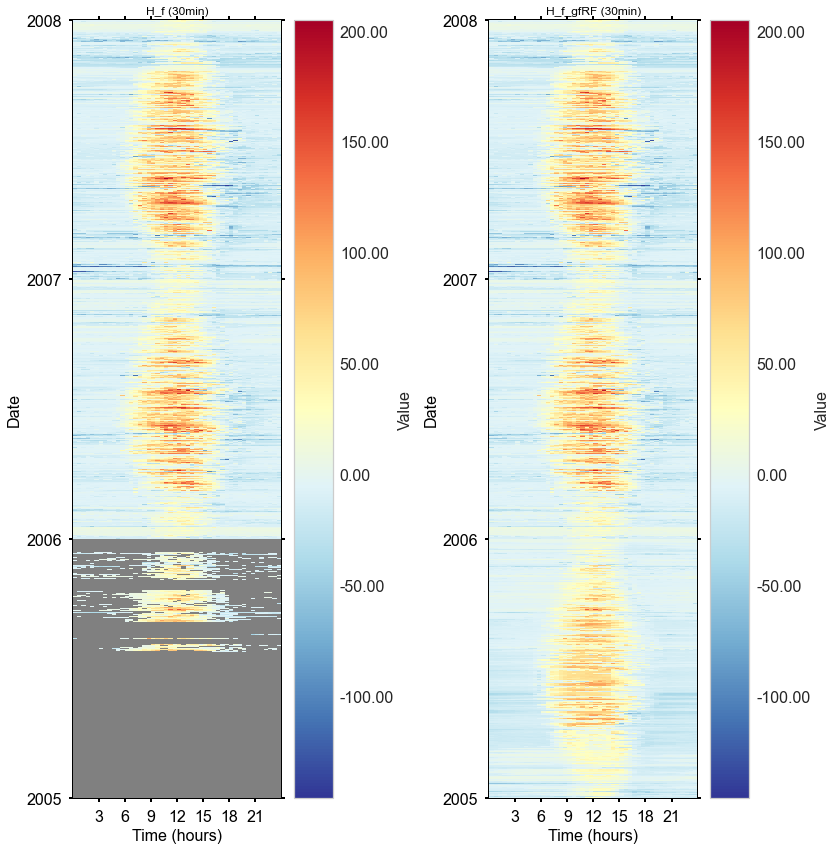
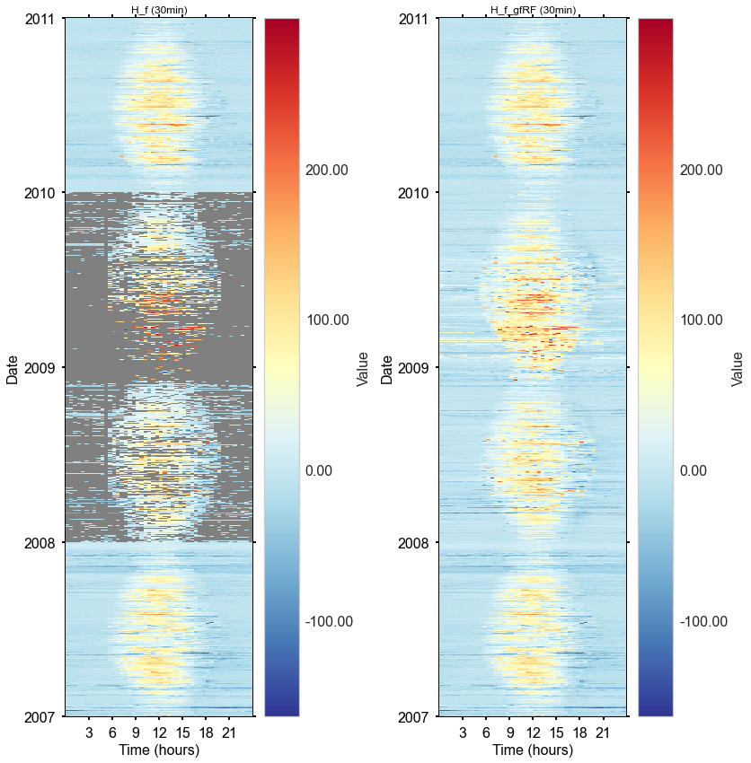
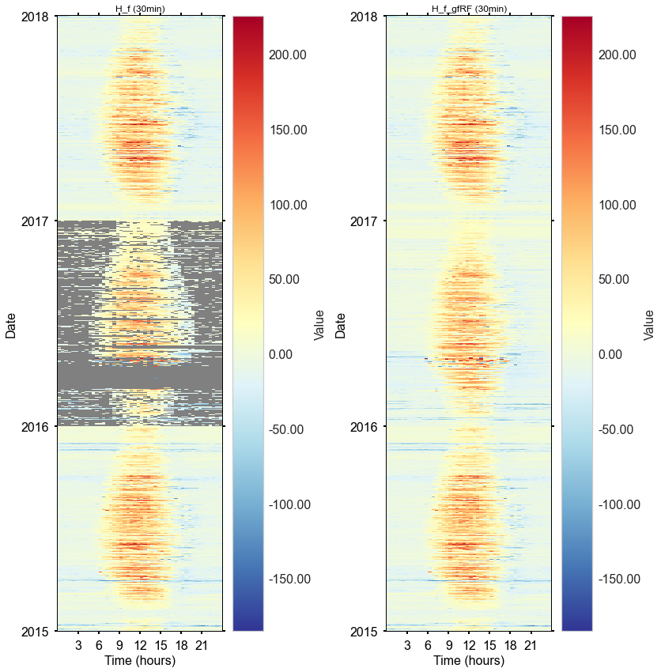
COLLECTION#
# Check for duplicates in timestamp index and column names
print(collection_df.index.duplicated().sum())
print(collection_df.columns.duplicated().sum())
0
0
collection_df
| NEE_CUT_50_f_gfRF | FLAG_NEE_CUT_50_f_gfRF_ISFILLED | LE_f_gfRF | FLAG_LE_f_gfRF_ISFILLED | H_f_gfRF | FLAG_H_f_gfRF_ISFILLED | |
|---|---|---|---|---|---|---|
| TIMESTAMP_MIDDLE | ||||||
| 2005-01-01 00:15:00 | 2.092792 | 1 | 7.737054 | 1 | -12.422459 | 1 |
| 2005-01-01 00:45:00 | 2.079400 | 1 | 7.691782 | 1 | -12.265577 | 1 |
| 2005-01-01 01:15:00 | 2.094548 | 1 | 7.763835 | 1 | -11.656234 | 1 |
| 2005-01-01 01:45:00 | 2.088299 | 1 | 7.408422 | 1 | -11.207629 | 1 |
| 2005-01-01 02:15:00 | 2.073170 | 1 | 4.867932 | 1 | -11.428826 | 1 |
| ... | ... | ... | ... | ... | ... | ... |
| 2016-12-31 21:45:00 | 1.204131 | 0 | 3.214732 | 0 | 3.757635 | 0 |
| 2016-12-31 22:15:00 | 0.980903 | 0 | 2.810929 | 0 | 3.808380 | 0 |
| 2016-12-31 22:45:00 | 1.002963 | 0 | 3.289392 | 0 | 4.222816 | 0 |
| 2016-12-31 23:15:00 | 1.173986 | 1 | 3.232717 | 1 | 5.461240 | 1 |
| 2016-12-31 23:45:00 | 1.099330 | 1 | 3.466575 | 0 | 6.959771 | 0 |
70176 rows × 6 columns
# collection_df.loc['2009-12-31 21:45:00']
collection_df['NEE_CUT_50_f_gfRF'].multiply(0.02161926).groupby(collection_df.index.year).sum() # Cumulative g CO2 m-2 yr-1
TIMESTAMP_MIDDLE
2005 -232.155741
2008 -7.657891
2009 21.001395
2016 -561.285540
Name: NEE_CUT_50_f_gfRF, dtype: float64
for c in collection_df.columns:
HeatmapDateTime(series=collection_df[c]).plot()
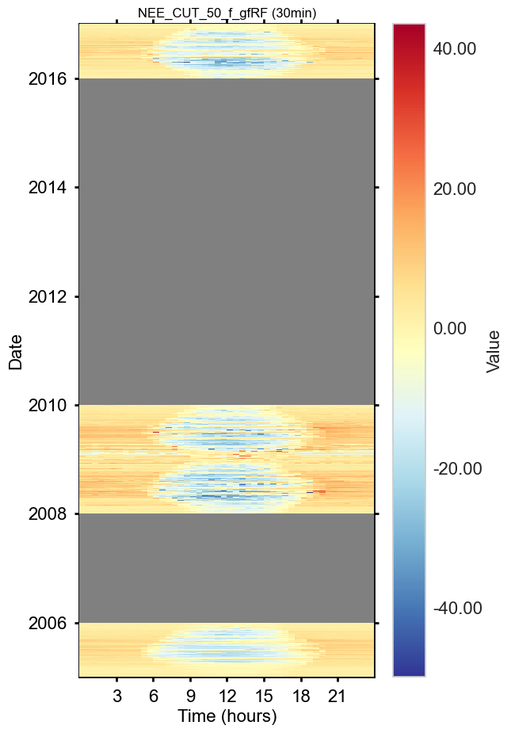
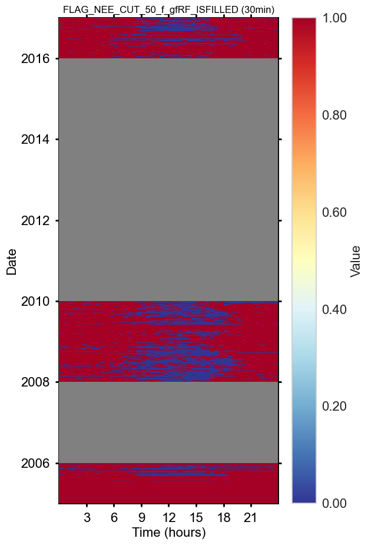
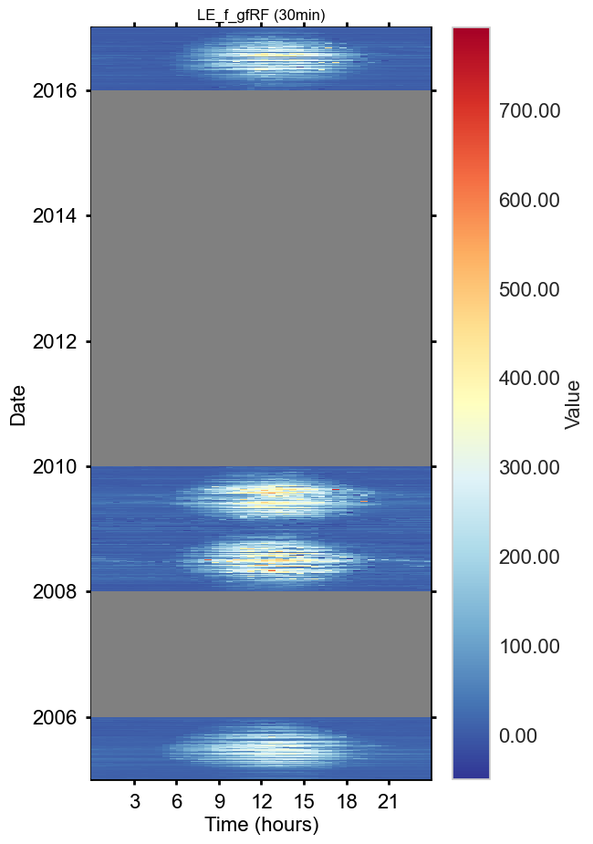
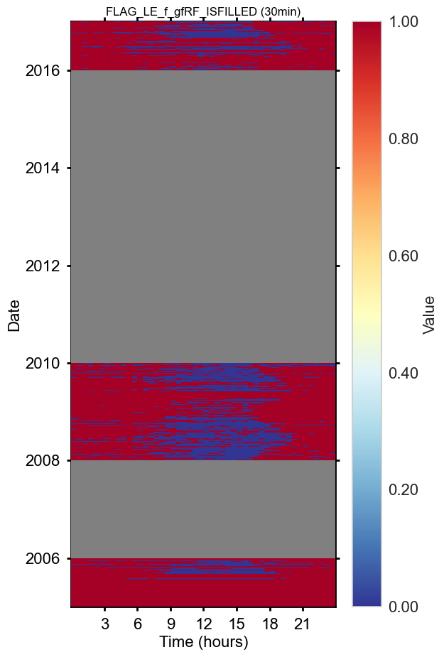
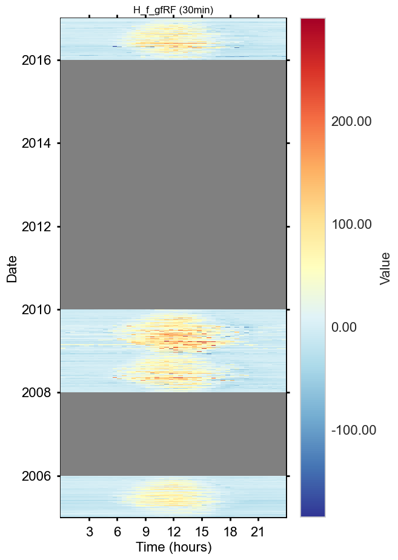
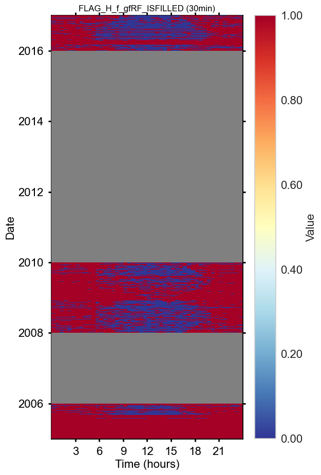
# locs = (collection_df['FLAG_NEE_L3.1_L3.3_CUT_50_QCF_gfRF_ISFILLED'] == 1) & (collection_df['NEE_L3.1_L3.3_CUT_50_QCF_gfRF'] < 0)
# collection_df[locs].describe()